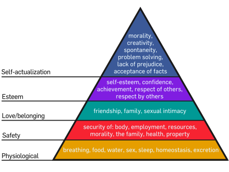

Dependency Day
Dependency Day 1
next
Dependency Day
My bed feels soft. Did I go to sleep on top of the duvet? Stars? Did I leave the blinds open? I try to turn to the clock, but there's just more stars? I wake up pretty much instantly at that point and OH SHIT THAT'S THE EARTH! I see the Earth and it's a long way away and I'm breathing? I bring my hands up to my face. No, no space suit. I see the Earth and I'm breathing and I'm not cold or hot and there's no space suit? I'm in space. What?
There's something glowing on my left hand. I don't wear rings but I now have one on my ring finger? It's orange. In fact, I'm orange. I'm glowing orange. I hold my hand up to my eyes and-
-AAAAaaaauuhhhh!?
That's an orange power ring. I'm being kept alive in space by an orange power ring. Well I… I suppose I've never felt suicidal, so that much makes sense. I poke my other arm. Yes, definitely flesh, I haven't been turned into a construct. I don't seem to feel the overwhelming avarice that comes from the orange central power battery, so I guess this is one of the other rings? One of the ones that Larfleeze keeps in his cave? Does he know it's gone?
Fucking stupid. It's Larfleeze. Of course he knows it's gone.
Alright. I'm calming down. As long as I want to remain alive, I will. I can probably fly by wanting to move. I want to move.
Did I move? I can't tell. I don't seem to have moved relative to the Earth, but the Earth is very big and I wasn't trying to move that far. I don't want to go anywhere in particular. I'm still wearing my pyjamas; I can't go out in public like this. Pyjamas?
I look down to check that I am still wearing pyjamas. Yep, with an added orange lantern corps emblem on the chest. Guess the ring just changes whatever I wear to something thematically appropriate? Shouldn't it have generated an actual uniform?
I'm going to assume that that Earth isn't my Earth. If power rings actually existed and this one had come for me it would have found me in my bed. Unless I was dreaming about flying in space? I don't remember doing that and I don't remember seeing a ring choose a sleeping wearer in the comics. Would that work?
Huh. If that actually is DC Earth down there then I'm going to be the most out of shape Ah! Ah! Ah! Ah!
Something happened. Everything's blurry. I think I'm standing on something, but I don't pay attention because everything hurts too much! My arms. My chest. My abdomen, my teeth, my eyes! How do eyes even hurt? They're watering and I'm blinking and gasping and all I can see is a creamy white colour and more black. I hug my arms to my chest and bend over. Oh, aagh, it's not just the pain, everything feels the wrong shape. The pain is being caused by something I can't fix. I don't want to-.
And it stops. My body still sort of tingles, like I've just gone from somewhere warm into somewhere cold and the veins in my skin are trying to decide whether to contract or not. But the pain is gone. My body still feels wrong though. I need to see-.
A thin orange line extends straight in front of me from the ring. At about four meters it stops and spreads right, as if someone was pouring liquid into a mould, only the mould is filling from the top left rather than the bottom. My first construct is a mirror. Sort of. Obviously it isn't reflecting anything, it's making an image of what it would reflect. It actually has a construct frame with a bevelled edge and is about three meters by two in size.
Whow. I'm looking good.
I've never been properly fat or anything, but I've never really taken to physical exercise and, well, no sense lying about it, I have been carrying a little weight about the stomach. Not any more. My arms are now about twice their earlier width. My shoulders are broader. My chest -I roll up my pyjama top- goodness, I have abs! I've never had abs! I run a hand over them. Huh, those don't feel like I was expecting. My chest hair is gone -wait, check- along with most of my other body hair. That feels weird. Feels kind of sticky. My face -the mirror shrinks and moves closer- is pretty much the same. My nose is a little straighter and if I can see this clearly my short sightedness has been fixed. No visible hair on my chin. Skin clarity appears to have improved. The hair on the top of my head is shorter. Looks like something Hugh Grant had in his prime, but longer at the back. Not sure how it's staying where it is. It should be flopping all over the place. Teeth are improved as well. Evenly sized, shaped and in good condition. I think I also look younger? Maybe, it's hard to tell when the image is orange.
I wave my hand and the construct dissipates. And that's when I realise that I'm STANDING ON THE MOON. Grey dust and rock all around and the Earth is visible in the sky. It's too much. I'm in a place only a handful of humans have ever been and my response is to drop to the ground, staring at the sky.
I'm sitting on the moon watching the Earth. I think the ring just rebuilt my body based on how I ideally want to look. Which really hurt. It must have been transmuting new muscle from existing fat. Or maybe even just making more meat from orange power? Should I feel bad about that? Doesn't everyone want to look a bit better than they do?
Shit. This isn't a dream. I never feel pain in dreams. And not enough is going on. I'm actually here and I have to deal with it.
Plan. Plan plan plan plan. Okay, first. Check that this isn't my Earth. I need to go home to do that. If there's another me here it's going to be weird, but I'm a fairly reasonable guy. DC comics don't really show much outside the US so I don't know if the places I've lived in will actually be there if I've somehow entered a comic reality. I can't plan anything else until I know where I am.
Now, how do I get there?
I stand back up. I go to brush off my legs because the dirt has coated everything it touched. Then I remember I'm wearing a power ring and I like being clean. A ring of orange passes over my body and the dust falls slowly away. As the ring reaches my feet I float a little off the ground. No sense getting dirty again just after cleaning myself. Now that's done, how to get to Earth? I have to want it to happen but I'm mostly just feeling apprehension about what I'll find when I get there.
Anal retentiveness to the rescue!
It's late at night and I have to be up for work tomorrow. I need to get to sleep and the best place for that is in bed! On Earth! If I don't then my schedule will be completely messed up. It's working! My need for regularity is controlling the flight!
Now to find somewhere familiar and see if it exists.
back
Dependency Day 2
next
Finding Eastbourne isn't that hard. Dropping down from the outer atmosphere I just follow the lights and the railway. It's always a bit further east than I think it is. I float down onto the station, hovering above the central track. At this time of night there's no one around so I take a good look. The building is locked up. That's normal, but then I notice that the fence between platform 3 and the car park is in the wrong style. Rather than having thick wavy uprights and a couple of crosspieces covered in chipped paint it's got thick posts with wire going across. The top actually has an overhang like they use at zoos to stop the animals climbing out, and there's actually a roll of razor wire. Who did they think was going to break in to Eastbourne fucking station? The display boards are wrong as well; they're actually LCD screens rather than the dot displays that are supposed to be there. It's stupid stuff, but when you're used to a place being a particular way it really hits you.
In a daze I float upwards. An orange night vision magnifier appears in front of my face and I can follow the route of the track. Hampden Park is still there. Polgate too, though it looks like they never moved the station so it's still at the end of the town rather than in the middle. Westham -the village where I grew up- doesn't exist. Looks like there's a proper station in Pevensey instead. Westham doesn't exist. Shit, I don't even….
Okay, okay, nothing I can do about it. It hasn't been destroyed, it was never there. The visor evaporates. My parents are probably fine. Next step. Next step.
Alright. I've still got no idea if I'm actually in a version of the DCU, but this definitely isn't my Earth.
I have an orange power ring, transmuted orange lantern corps pyjamas and I look like a bodybuilder. The ring-
"Ring. State remaining power."
"93% power remaining."
Woo. Did that speak out loud, or just in my head? Sounds weird. A power ring at 93% power and no way to charge it. That is a problem.
"Ring. Locate lantern."
"Specify."
"Locate the lantern this ring is paired with."
"None recorded. However, this ring detects a weak light-tether, possibly connected to such a device."
"Show location."
An orange compass point forms in the air, pointing out into space. I get the impression of a significant distance… I don't really know stars, but that's.. probably the Central Power Battery. Not picking that up then. Um, okay. As long as the ring is charged I don't need clothes. I probably don't need to eat either, now I think about it. Didn't Guy Gardner say something about that when he was on Superboy Prime guard duty? No, I shouldn't assume-ugh!
Come on! I spent more time reading comics than I did on my bloody degree coursework! Breathe. Woosaaah. What do I need? Money, and a power source for the ring. Probably in that order. If I'm not actually in the DCU money is far more important. If I am, it's a toss up. That place is dangerous. For goodness sake, an Imperiax probe destroys the capital of Kansas and a couple of months later it's business as usual. I need this ring.
"Ring. Scan planet for compatible power sources."
"None found."
Shiiiiiit. Wait, no lanterns at all?
"Ring. Scan planet for power lanterns, any colour."
"Will detected."
"How many?"
"Three."
That probably means Hal Jordan, Guy Gardner and John Stewart. And I hope I didn't just tell them where I am. Shit, I hope I didn't just tell Larfleeze where I am! No, no, can't do anything about it now. I doubt they'd just give me a lantern so what - Alan Scott! Alan Scott's Starheart lantern shouldn't register as a standard lantern because it was designed as a containment vessel. If this is Justice League Unlimited or something it might even still be in China.
"Ring. Detect Guardian-made containment vessels on Earth."
"Seventy-five found."
What?
"Ring, detect guardian containment vessels containing energy."
"Twelve found."
"Any in China?"
"China unknown."
This world has no China? That doesn't sound right.
"Ring, locate Eastbourne."
"Eastbourne unknown."
"You don't have a local atlas, do you?"
"No Earth locations listed."
Unfashionable end of the western spiral… Can't make a grab on the Starheart because I can't find it. If it even exists here. Can't think of any other easily reachable power sources. I could ask the Justice League nicely if they could put me in touch with Maltus or something. No, the Guardians would put the kibosh on that as soon as they heard about it. So, can't get a power source quickly. Money first then.
"Ring. How good are you at asteroid mining?"
"Construct strength is dependent upon avarice."
"Can we, assuming I want it badly enough, mine asteroids in this system and get back to Earth… um… with at least 60% power remaining."
"Answer depends on type and volume of material extracted and precise avarice levels."
Fair enough.
"Platinum and gold only. About this much."
I make a football-holding shape with my hands.
"And I want it as much as, uh, somewhere between my-life-depends-on-this and I've-been-looking-forward-to-this-all-week."
"Multiple variables decrease accuracy. Best estimate suggests high probability chance of success."
"Plot course to the asteroid in this system which offers the greatest quantity of the metals stated."
And I know where the asteroid is. It's… I don't know… what gravity would be if mass were money. Or something. There's no navigational display but I don't need it. I can find it like I can find the toilet at home at night without turning the lights on.
I might actually be able to make this work.
back
Dependency Day 3
next
The ring did all the hard work while I just grinned at the pile of thin disks floating next to me. Smashing a fairly large asteroid up, grinding it, sort of sieving it with a construct that pulled out what I wanted but left the rest of the lump behind and then shaping the metal into coins. The process was slow at first, but picked up speed after the first few disks were finished. I suppose I find it easier to want things I know I can get. It's too dark to see much of the rock, and the constructs are blinding compared with everything else so I have to look away. But I just mined an asteroid! The first human commercial asteroid miner!
I actually did five large rocks and a load of small ones before I registered that the pile was far more than I needed or could carry by myself. It's just so far outside anything I've done before! And kind of fun! I've just made more money in… I'm not sure, not much time… than I've made in my whole life. I think I'm actually giggling, but with no air I can't hear myself to be sure.
The disks, coins, are floating around me. They're about three centimetres across and maybe a third of a centimetre thick. I know that platinum is silver and gold a dull yellow but with the ring as the only light source they all look orange at the moment. And -huh- looks like I stamped them with the orange lantern corps sigil on one side and a representation of a lantern on the other. Not sure I meant to do that, but it sort of feels… right.
I should head back to Earth. I can just take some walking around money and leave the rest here.
I'm actually a bit reluctant to do that. Intellectually, I realise that the chance of anyone coming here to take any of my work is miniscule. But I always worry about whether or not I locked the door after I get to the end of my path back home. It could happen, right? I mean, they might just think the coins were odd and take a couple for some sort of analysis, but I put effort into this. These are my coins.
I'm being silly. Where would I even put them? Just grab some small rocks, fuse them together around most of the shiny coins. No one will know they're there. I'm still going to have to carry the rest with a construct. My pyjama pockets just weren't built for this.
back
Dependency Day 4
next
I'm floating over the Earth. I think that I'm in the upper atmosphere. I'm certainly close enough that the lights below form distinct huddles. I'm actually not completely sure what is beneath me. Picking out coastlines covered by clouds and in the dark is not simple.
So; money, sort of check. Power source, not check but I have some leads. Information, not check. I could try eavesdropping on local telecoms but I don't want to risk being found yet. Also, what are the chances that a random call has useful information? Clothes, not check. I think that has to be my next objective. Unless I plan to convert to Sikhism I need underwear. I need something I wouldn't mind fighting in and something I can wear when I'm not trying to draw attention.
Fighting. I haven't been in an actual fight ever. I haven't even been in a play fight since primary school. I suppose punch ups come with the ring but I've no idea what I'd do if someone actually went for me. Oh god, I'm like a slightly better looking Wee Hughie.
I remember from Flash villain pages on Wikipedia that there's a guy in Central City who does armoured costumes. I think his name starts with a G? B? Sounds Italian? It was a while ago. Shouldn't be too hard to find him if he exists here and I doubt he'll complain about being paid in precious metal rather than normal money. Speaking of which, I'm going to have to find out how much this stuff is actually worth. Not an immediate concern; I'll just overpay people.
Overpay a bit. I'm not going to get silly with it. That would just draw more attention. And I certainly don't want to spend all my time hanging around asteroids. That's probably only fun once.
A city full of supervillains is something I'll brave after I find a way to charge the ring. Some sort of motorbike protective gear should do in the short term. Should be easier to find. Actually-
"Ring. State remaining power level."
"68% power remaining."
Okay, that isn't too bad. My best lead on a power source is still Alan Scott. Other options I've come up with include trying to get to Maltus (don't know where it is if it exists), Qward (insanely dangerous) or asking a local super scientist (mostly malign hypercognitives, no guarantee that even if they try they'd be able to do anything before I ran out of power). Maybe I could get some sort of local avarice demon bound to the ring? Wow, that sounded stupid. And dangerous. I'll put that just ahead of going to Larfleeze and asking nicely.
If Alan Scott exists, he'll probably live in either New York or Gotham, if those are even separate places here. My knowledge of regular US geography is weak to nonexistent and now I have a load of fictional cities to work around. I think that New York is on the east coast near the top of the US but it's not like international borders are visible from up here. Under the knobbly bit with the French Canadians in it? In any case I need to find New York, or Metropolis if New York doesn't exist. Metropolis, because Gotham is a shithole full of dangerous lunatics and I'm not going there unless I have to. My need for information outweighs the risk of bumping into a Kryptonian. Should be able to get the information I need from a newspaper or a library without too much trouble. The Justice Society should have been big news and there will be some record of Alan Scott's public life. Clothes, something to put my coins in, then library. I need to go lower.
Waaw. Clear priorities must do something to the ring because I just shot through the sky like a very fast orange thing. I'm looking down on what I'm pretty sure is the American east coast. I've nearly caught up with the dusk line so it's probably evening down there? I can't be sure that the season is the same as back home, so really it could be late afternoon instead. Heck, I don't even know the date. Add that to the to do list.
There are about eight semi-distinct groups of lights that might be what I'm looking for. Is the Statue of Liberty in New York harbour, or Metropolis harbour? It was in Metropolis harbour in the Christopher Reeves films, but I can't remember for comic canon. I suppose either will do for now.
"Ring. Scan that-"
I make an arc with my right arm.
"-area of coastline. I'm looking for a large robed statue on a small island just off the coast."
"Matches found. Displaying most probable."
A construct forms in front of me. The statue the ring has found certainly looks like the Statue of Liberty, from what I remember from films and television series. As the construct extends down it fills in… oh, what was it called? Staton Island? I vaguely remember it from GCSE History. It's as good a match as I'm going to get.
Right! Let's go buy some pants! And some trousers!
Oh god, I'm going to have to get used to American English.
back
Dependency Day 5
next
I'm floating over the streets at a height of about ten floors up. The offices on either side are empty so I assume it's fairly late in the evening. A quick fly over revealed no LexCorp building and no Daily Planet so this probably is New York. I don't really want to drop to street level but I've got no idea where the shops I'm looking for are. Probably not in the central business district I suppose.
Not much open at this time of day. I really need to find out what local time is and get a watch. Finally, I find a place. Not sure if it's open for business, but there are motorbikes and a couple of vans outside and light on inside. I drop down to float just off the ground. I'm glowing orange but I'm not sure if anyone inside has seen me. The sign over the front of the building says 'Bluebeards Bikes' and has pictures of bones, bikes and women wearing snakes. Not the sort of place I'd usually go to. In fact, I've really got no idea what the protocol for this sort of situation is. I think I'll affect the manner of a polite but slightly daft Englishman. Act like this happens all the time -and around here it might-, make the purchases, then leave.
I push open the door.
"Sorry to bother you so late, but I saw a light on."
The man at the till is thin, has dirty blonde hair and is wearing a black t-shirt and jeans. The six other men are wearing quite a lot of leather, denim and metal. And tattoos. And they are all staring at me. Four of them were stacking rectangular wooden boxes in what looks like the workshop area. One is standing by the till and the last was flicking through a magazine by the rack. He drops it.
I'm pretty bad at reading facial expressions, but I think they look astonished. Two are actually gaping. The guy at the till actually looks scared. Right! Right. Super powered person shows up at business premises late at night. I raise my hands in a placatory gesture.
"No, don't worry. Heh. Not a supervillain. I'm just here to shop."
That doesn't seem to have helped. They're actually backing away from me. Which causes one of the ones near the crates to trip over.
"Are you alright?"
He actually cringes.
"I'm fine. I'm fine."
No sense in panicking the man I suppose. Oh, the lid of the crate he tripped over has fallen off, revealing… well, I shouldn't be surprised I suppose. Public gun ownership is supposed to be fairly common in this country. Everyone follows my gaze. I think a couple of them are hyperventilating. Hands drift under jackets.
"Guys, I get it. Second amendment. You're allowed guns. Might want to think about transporting them a bit more carefully though."
I drift back to the desk. The face of the chap there has taken on a rictus grin.
"Sorry for being a nuisance, but I'd really appreciate it if I could speak to your manager."
"Sure. Ah. Sure thing buddy."
He presses a button on his desk and leans forwards.
"Ah, Mitch, could you, er, could you come down here fer a minute?"
"Ooh, is that a shotgun? I didn't realise they made them that short."
"Yeah, no, that's fine, but you need to get down here man."
"Is that icing sugar?"
A door opens at the top of the stairs built into the side of the room and a overweight man in a black heavy metal themed t-shirt and blue jeans strides out. He's bald, but his beard is trying to make up for it. He's also carrying a revolver in his belt.
Goodness. What must the crime rate be like in this area?
"Lenny, what in Gawd's name…"
He sees me and stops moving.
"Hello! I'm Orange Lantern Two Eight One Four."
I float up to him and hold out my right hand.
"Do I have the pleasure of addressing the manager of this establishment?"
"Ah. Ah, yeah that's, that's me."
I grin, look at my hand, then look back at him. He blinks, and then starts.
"Uh, pleased t', pleased t'meet ya."
He shakes my hand very quickly, like he thinks I'll want to keep it or something. Then he just sort of stands there. What happened to American tradition of good customer service?
"I know that it's rather late, but I'd really like to buy some things. Jacket, trousers, boots… do you sell t-shirts here? A couple of t-shirts. And I'd like to pay in gold, if that's possible."
There is a flicker of a smile and his eyes dart to the till. "Um, sorry, but we don't take credit card here."
"No no. Not a gold card. The metal. Gold."
"Y-. Y'wanna pay with solid gold?"
"Yes."
His next look is more appraising. "Sure. Sure buddy, we can do that. You guys-" He indicates the other men. "-get back to work. Man wants to buy some clothes!"
Mitch was really helpful once he calmed down a bit. I found a jacket, boots and trousers made of… well, I don't know, but it was fairly tough and had some sort of armoured plates. I also found the price tags reassuring. They also had jeans. I have just realised that I don't know my current size. Huh. I float several black pairs of different waist measurements to my try-on pile. No underwear and no watches, but they do have a small range of offensively embroidered vests and t-shirts. I grab a small selection of grey vests.
"You couldn't point me in the direction of the changing room, could you?"
"We… Uh, we don't really have one. But you can use my office."
"Thank you. I really appreciate this. You're being a tremendous help."
I walk up to his office. A couple of chairs, desk, computer, playboy calendar, folders and a few personal photographs. The vests are tight in places I'm not used to my clothing being tight, but it doesn't take long to identify my preferred size. Half a second with the ring eliminates the imagery. My pyjama shorts make getting the jeans on a bit awkward. Turns out that my waist has exactly the same circumference, it's just made of different material. The constant sensation of cloth rubbing against my ring-optimised body is really bringing home the extent of the change. Once I get the boots on I have an ensemble that I could actually walk down the streets in.
"Ring, are you able to store uniforms?"
I remember thinking how convenient Lantern Stewart's costume change in Justice League Unlimited was. It would save having to lug heavy bike gear around the place.
"Affirmative."
"Alright, acquire that jacket and those trousers as 'light combat uniform'."
"Unable to comply. Uniform must be worn for subspace storage."
I roll my eyes and put them on. The trousers are even more of a pain than the jeans. But, plus side, I'll never need to struggle to get them on again.
I think that the ring must be controlling my body temperature. I should not be able to wear this much stuff and remain cool.
"Ring, designate this jacket and the outer trousers as 'light combat armour'."
"Designating."
My orange aura pulses. The colour and pattern of the jacket is eliminated. The body of the garment is now dark grey, with an orange lantern sigil across the chest and smaller ones on the shoulders. The trousers are dark grey and unadorned. The ring has also altered the fit: they are now both the perfect size for me.
"And send it to subspace."
My uniform disappears. My uniform. That feels odd to think. The difference between me and the superhero I'm committing myself to becoming.
I have no idea what I'm doing.
I keep the boots on. I should get some other footwear, or at least thick socks. They certainly aren't comfortable on bare feet. I walk back into the main shop floor. I end up exchanging three gold coins for the uniform, boots, three pairs of vests and jeans, and a pannier to put them in and small holster type bag which straps onto my leg to hold my coins.
They also provide me with some very useful information: the day just starting is Monday the 5th of July, 2010. Three years and change ago by my reckoning, though I can't think of any way to make that useful.
back
Dependency Day 6
next
5th July 2010
Early morning
I eventually found the New York Public Library by having the ring scan every street sign in the city. I really need to start scanning maps into this thing. I flew past a clock to get here so I actually have the time now. It's six fifteen and the library opens in three hours forty five minutes. I'm reduced to sitting on the steps and waiting.
I've still got the ring on but I seem to have managed to turn down the orange glow. I doubt that I'm in serious danger of getting shot dead due to lack of shielding but I don't know anything about the real New York. Either the New York of my own world or of this one. I do remember reading that compared with the real world comic cities have ridiculously high crime rates; that might explain all of the guns I saw earlier.
Does this library have publicly available computers with internet access? I'd tend to assume so but I've never been into a foreign library before. I assume it won't be free. Will I be able to pay in gold here as well, or will they be sticklers for procedure and force me to find a goldsmith or something? That'll be annoying, but at least I can get directions here.
I wonder if I can access the library computer system from out here? I don't really want to break in. I know I could, and probably without breaking anything or setting off an alarm… No, I can't take that sort of risk yet. If someone sees an orange light and thinks it's a fire, I'm in serious trouble. Can I send a thin construct in? Should be possib-. Wireless. Would a public library have wireless internet in 2010? Would it be on now? I gesture towards the library with my left hand.
"Ring. Access wireless data network."
"Access available"
That was surprisingly painless. No obvious construct generated, though the ring is glowing a bit. I rotate it on my ring finger so that the sigil side is on the palm side.
"Ring, acquire maps. I need you to have navigational data for this system and everywhere on this planet."
"Mapping data acquired. Navigation updated."
"Ring, tell me about Alan Scott. Firstly, does he exist?"
Because I'm boned if he doesn't.
"Alan Scott, born nineteen eighteen. Presently still alive. Currently resident in New York City."
Relief.
"Was a super hero operating under either the name Green Lantern or Sentinel during the nineteen forties?"
"Confirmed. Green Lantern began operation in nineteen forty. No further corroborated sightings since nineteen sixty nine."
"Compare available visual records. Was Alan Scott that Green Lantern?"
"High probability match."
Excellent.
"Ring, give me biographical information."
"Alan Scott, born nineteen eighteen in Gotham General Hospital. Presently still alive. Married Rose Canton in May nineteen forty eight. Marriage annulled in May nineteen forty eight due to insanity. No children recorded. Employment history. Railway engineer nineteen thirty seven to nineteen forty. This represents the most likely time he acquired the power ring and lantern. Reporter for WXYZ Radio nineteen forty. Volunteered for US army nineteen forty one. Released to act as war reporter. Promoted to news manager nineteen sixty five. Promoted to managing director nineteen seventy two. Retired nineteen eighty eight, though still maintains a minority stake. Currently residing in New York City."
"Ring, what was the source of that information?"
"Primary information source is website 'Encarta Populi'. Quoted information cross referenced with at least three other sources."
Looks like Wikipedia exists here, in a somewhat altered form.
"Ring, does the Justice League exist, and if so who are its members?"
"Organisation 'Justice League' exists. Official records state that the Justice League was founded in February two thousand and three, after its original members -Superman, Batman, Wonder Woman, Flash, Green Lantern, Aquaman and Martian Manhunter- coordinated their efforts to defeat an Appellaxian invasion. Please note that the Green Lantern referred to was not Alan Scott. Current roster also includes Zatara, Captain Atom, Black Canary, an additional Green Lantern, Captain Marvel, Green Arrow, Hawkman, Hawkwoman and Red Tornado."
"Ring: confirm. Just 'Justice League', or 'Justice League of America'?"
Organisation full title is 'Justice League'. Though current membership comprises thirteen confirmed or probable US nationals to three non US nationals its UN charter makes no mention of nation of origin requirements.
Other important people in the setting next. Clark Kent, check. Bruce Wayne, check. Diana Prince, not check. I suppose Wonder Woman just never bothered with the alias because she definitely exists. Oliver Queen, check. John Jones, about three hundred possibles and I don't know the character… um, person… well enough to tell if one of them is him. Wally West, check. Oh. He's fifteen. Huh. Looks like this version of DC has the character timelines from.. ah, shit. Before I started reading comics. So, Barry Allen, check. Other Green Lanterns, triple check.
Chara- no, people who interest me next. Right. Theo Adams exists. Alec Holland existed, but there's nothing on Swamp Thing. There's no information on Tefe Holland or Rachel Roth or Timothy Hunter or Gemma Masters. Accomplished Perfect Physician? Nothing, but then I can't remember his actual name. Immortal Man In Darkness? I doubt the Chinese would tolerate that sort of data leak, so no replies doesn't surprise me. A search on Sonic Sally rewards me with a ten second clip of her masturbating with a piece of barbed wire. God, that whole thing is a mess. Worse, I don't think I can fix it without a time machine. One of only two times I ever cried reading a comic book was when her teddy died. Victor Stone is eleven and completely organic. Lonnie Machin is seven. Precocious little twerp is already fighting the forum wars as 'moneyspider'. John Constantine? Nothing, but I seem to remember that he uses magic to erase his records. Captain Cornwall? Two of them, and the older one is also the face of 'Golden Crust Pasties'. Knight and Squire? The Knight search gets me a series of tabloid drunken celebrity photographs, but none of them are dated this year so hopefully he's on the wagon.
Stopping now before I get TVTropes disease. Oh, too late, there go two hours.
I need to get it into my head that these people are real here. Thinking of them as fictional characters is wrong, and will result in me doing stupid things.
Alright, it's half past eight. I don't like phoning people I don't know, but I'm on a clock. How to go about this? Just telling him that I know who he is and that I really want his lantern will most likely result in him hanging up and me being visited very quickly by hostile superheroes. These are not people who can afford to take people discovering their identities lightly and once the Guardians get involved, well. Dread to think. I think it'll work better if I can talk to him face to face. Explain things. Let's face it: even at ninety-two he can probably punch me through a wall. I can't see him finding me threatening.
"Ring, interface with local telecommunications. Contact Alan Scott's home phone number."
A phone construct -a proper handset, from a phone that had an actual dial- appears in my right hand. Shit. There are a few people around now, and while I suppose they just assumed that I was talking on a mobile before a glowing handset will attract notice. Fortunately, my desire not to be noticed causes it to change to a flat mobile handset instead. It rings for a moment, and then:
"This is Alan Scott."
"Oh, um, good morning sir. I do hope I'm not disturbing you?"
I hear a sigh. "Is this about the New York Times subscription again? Because-."
"Oh no! No, um, sorry, um, my name is-"
Can't speak. My mouth and throat freeze. Can't say my name? Think fast.
"-is Colin Underwood. I'm writing an essay on the, the emergence of the American superheroic tradition. You were a reporter for WXYZ Radio during the earliest days of costumed heroes, and were there for the formation of the Justice Society. I'm in New York now. If it's not too great an inconvenience, I'd, I'd very much appreciate it if you'd be willing to grant me an interview."
There is a pause.
"Heh. Kinda long way to come for an extra credit assignment, isn't it, son?"
"Well sir, I've never actually been outside Europe before, there was a cheap flight. I'm mostly here for tourism. I had honestly assumed that you still lived in Gotham, or were… Well… Uum… Unavailable?"
"Don't worry about it kid. I feel the ol' axles creak every time I take a bend these days. Tell you what: give me an hour to get myself organised and I can speak to you this morning."
"Thank you sir! Oh, whaw. This is really great. I, I will see you shortly."
I dismiss the construct. Stage one, alright. Now to work out what to actually say to the man.
back
Dependency Day 7
next
5th July 2010
Morning
It's midmorning when I reach the front gate of the house of Mr Alan Scott, retired radio journalist, manager and director and former Green Lantern. I've used the time to study his history and rehearse my lines. I do actually want to talk to him about the early days first though. The Justice Society members really kicked the whole costumed crusade thing off. They weren't the first US super heroes -Hugo Danner had that title- but the primary coloured clothing NGO thing is their invention. My home has literally nothing equivalent to the beginning of the DC heroic age, and learning how normal people were affected would probably help me avoid making mistakes. It also isn't really covered in the comics at all. Marvel had that thing with the Bugle photographer but Marvel New York is condensed crazy.
Before I go in:
"Ring. Scan that house for Oan technology."
"Oan technology power source detected. Further materials consistent with known Oan technology also present."
He still has his lantern, then. I don't know if it is the Starheart from the standard DCU, but I should be able to adapt it. If not, then I've still got-.
"Ring, state current power level."
"Fifty three percent power remaining."
That's what I get for wasting that effort on dramatis persona enquiries. Mr Scott's house is a medium sized detached house in Inwood, a place I'd never heard of until I had the ring direct me here. I'm not sure exactly what I expected. Given his former occupation I assume that he's fairly well off but I suppose that since it's just him he didn't see the point of getting somewhere bigger. There are a couple of borders along the edges of the brick paved drive, but they're covered in gravel with only a few medium sized bushes planted at intervals. Adds some colour and I suppose it's low maintenance. There's no car in the drive but there is a garage so I suppose it could be in there. The gate blocking the drive has a communication panel on one of the supporting brick posts. I walk over and press the button. I hear a buzz. Ug, if this is anything like the one at work…
"Hello?"
Completely clear sound? And a screen? Mr Scott looks good for his age.
"Good morning Mr Scott! Colin Underwood here. I phoned earlier?"
"Of course. I'll let you in."
There is a soft clank and the gate swings inwards. I walk towards the front door and he opens it before I get there. Blue jeans and pale blue shirt. He still has most of his hair, and it is still visibly blonde. He looks physically fit as well, wrinkles aside. Really, he could pass for a man half his age. He extends his right hand.
"Alan Scott, formerly of WXYZ news."
I stand there for a moment. I am now talking to someone who was a superhero. And was a fictional character. It doesn't fit in my head. I'm just.. talking to a nice, retired American man.
"Colin Underwood. Pleasure to meet you."
His handshake is a perfect formal handshake. Not too light like his hand is acting on sufferance or too test-of-strength heavy.
"Please, come on in."
The interior of his house is light and pleasantly decorated. Maybe a bit empty. No, uncluttered. A single man lives here and he keeps it tidy. As he leads me towards the living room I get my first clear look at my revised face in a mirror on the hallway wall. Goodness, I look young. I think it's the lack of stubble, perhaps combined with my memory of the last time my hair was this short. I'm twenty nine and if I told myself I was a decade younger I'd believe me.
He offers me the settee and then settles into an armchair with a view out of the window across what I assume is a park.
"So, where did you want to start?"
Where do I want to start?
"I suppose I should start at the beginning. When did you first become aware that what might be called 'supernatural abilities' were things that actually existed?"
He gazes out of the window for a moment, and strokes his chin.
"Hmm. Well, thinking back, I don't think I was really in any doubt that things like that could happen. I grew up reading about Hugo Danner's actions in the Great War. 'The Mighty Coloradan.' You know who Hugo Danner was?"
"Yessir. The first American superhero. Tremendous physical potence and fortitude."
He face creases. "You know, ah, I actually met him once. He wasn't exactly… well, the superheroes were active when I started out with WXYZ, they had a clear idea of how they were going about things. They didn't always get things right, but that was an execution thing. They never doubted the mission. Despite everything he could do, I don't honestly think Danner ever really knew what he wanted to do with himself. Maybe… He didn't know anyone else in his position. The guys who founded The Society, even when they weren't working together, they knew each other. If things got kinda crazy, they needed to blow off steam with someone who'd been through the same stuff as them, they could. He didn't really have anyone. When he was growing up, there just wasn't anyone like him. That just isn't good for a man, especially not a man with the powers he had."
"Was meeting him the first time you encountered that sort of thing?"
"Oh, no. I didn't actually meet him until the early sixties. He came back to the US after spending some time in Brazil. No, the first time I saw something like that myself, I think it would have been November of nineteen forty. The Green Lantern held a press conference, and did a little demonstration of what his ring could do."
Yeah right.
"Nothing before that? I mean, there's been reports of low level magic use in US cities for, well, always."
"You hear things, maybe even see a thing or two, but you go home and you tell yourself it's all smoke and mirrors. And mostly it is. Someone like The Green Lantern, or the original Flash, or Fate once he came out of hiding? You can't fake that. It's happening right in front of you, and everyone can see it."
"You lived in Gotham pretty much the whole of the time Green Lantern was active there. Did you have a lot to do with him?"
"Not really. I saw him at press conferences, did a couple of interviews. I think we even went to a few of the same parties, but I couldn't say I knew him as a person."
"What sort of impression did you get of him?"
"He was a good man. Polite, maybe a bit stilted. Kinda, not preachy exactly, but a guy who didn't have to bother with a lot of stuff regular folks go through. Heh, why worry about cab fare when you can fly right over? He did a lot of good, and as far as I could tell it never went to his head."
"What do you remember of the public reaction to people like him going public?"
"In my experience people can ignore most anything not happening right in front of them. If a guy uses his powers for good, they'd say more power to him. If he uses them for evil, stick him in irons and throw away the key."
"Was there no negative reaction at all? I mean, the House Committee on Un-American Activities-."
"Jo McCarthy was a son of a bitch, if you'll pardon me. There was never any public support for that sort of thing."
Ooh, that's a sore point.
"Did you cover the hearings at all?"
"Wasn't my beat. Just as well, really. If I'd been there, they'd probably a'ended up dragging me out, kicking and shouting."
"Did you cover the formation of the Justice Society?"
"At the time I didn't have the pull to get that gig. Wrote a couple a'articles about them later. I think the paper put all that stuff online if you care to look for it."
"Do you remember the group disbanding?"
He seems to sag slightly. "Yeah."
"Do you know why?"
"No, but if I had to guess? Wonder Woman never got old. Come to think of it I don't suppose Red Tornado did either. But for the other guys? You're in your twenties, you're full of vinegar. You have super powers as well? There's nothing you can't do. Then, you hit thirty, forty. Maybe you got a wife, kids. A mortgage. A few injuries that keep you up some nights. You don't wake up quite so early and you try not to stay up so late. You want to fit in something like the Society as well as all'a the other stuff you gotta do? Good luck."
He looks at the ground, and sighs.
"Ah, it was a shame, though. They still got together sometimes, after that. Big cases. Mordru in sixty nine. Left the office to report on that one myself."
"What do you think of the Justice League?"
He perks right up.
"Those people, it makes me feel good just knowing that sorta thing can still happen, you know? I'd heard of The Batman before they all got together. Can't say I thought much of him. Heh, if it works out like that, I wouldn't mind being proven wrong more often. I didn't know much about Superman, at the time. Watching him since, he seems like a really good guy. Can't quite place his accent. Wonder Woman looks much the same as ever."
Wistful? Well, not that surprising really. Ah, time to get to the point. I feel a bit bad for misleading him like this. How to lead in?
"What do you think happened to Green Lantern's equipment? I used to assume that the first new Green Lantern was using it, but then the others turned up."
"Got me. Maybe Mordru destroyed it. Maybe it's in a crawlspace or a loft somewhere. Hey, maybe he put it down somewhere and forgot about it. Happens when you get older."
Fine, don't make this easy.
"Mr Scott, may I be frank with you?"
He waves a hand. "Go right ahead."
"Mr Scott, I believe that you are in fact the Green Lantern of that era."
"Oh? And what makes you think that?"
"Because your hair, build, voice and presence in Gotham City match that of the Green Lantern perfectly. Also, because this power ring has detected an Oan power source fifteen metres in that direction."
He gives me a measured look. "Your 'power ring'?"
I raise my left hand, palm open. "Ring, light combat armour please."
A wave of orange light passes over me, and in its wake my protective gear reappears. Mr Scott settles back in his chair.
"Alright son, you've been playing me long enough. What do you actually want?"
"That's simple, Mr Scott. I want your lantern."
back
Dependency Day 8
next
5th July 2010
Morning
"Is that right?"
"Yes. I was thinking… Five hundred million dollars? Ten percent deposit by the end of the week, balance within two years?"
"I'm… Y… You want to buy my lantern?"
"Yessir."
I think I gobsmacked him, but his expression doesn't actually change much. The only things moving are his eyes and eyelids and he blinks.
"If the amount is insufficient-."
"It's not the amount, son." He rubs his brow. "What..? What exactly do you intend to do with it?"
"Well, first I have to check that it can be made compatible with this ring. Then, recharge. I don't really have any definite plans after that."
"Running low on power?"
"The asteroid mining I budgeted for, but you'd be surprised how much power internet background research can take. Ring, how much left?"
"Fifty two percent power remaining."
His eyes twitch. "Your ring can talk. So you're, what, a member of the Orange Lantern Corps?"
"That's right."
"They didn't give you a lantern of your own?"
"I know, right! If I'd been anywhere but Earth I could have been in serious trouble! As it is, this ring is tied to the central power battery on Okaara. It's far too far to commute."
I know that people avoid looking at other people's faces when they're thinking. So much of the run time on the human brain goes into analysing other people's expressions, you get measurably dumber when you look at one. He's currently studying his ceiling.
"Theoretically speaking, if I were not prepared to part with it, what would you do?"
"I'd try to persuade you to change your mind. If you were adamant… I'd just have to try somewhere else. Look, I'm on a bit of a deadline here. If you could give me some sort of indication-"
"Would you mind if I made a phone call?"
"Of course not."
He gets up and walks out of the room.
I think this is going reasonably well. I couldn't predict exactly how he'd react, and he seems more confused than alarmed or irritated. I had no way to tell how big a deal breaking his secret identity would be. I still don't, really. Surely everyone who had a personal grudge against him would be either dead or in their dotage by now? Not Mordru, obviously. Never found him interesting as a character but he was certainly powerful. Vandal Savage is probably around as well… and I didn't bother to look up either of them, damn it!
Mr Scott didn't strike me as the sort to have wireless internet, and stealing someone else's access while in his house didn't seem like a good idea.
I can just about hear Mr Scott's voice outside the room. Can't make out what he's saying. Tone seems to be conversational, with occasional rises for emphasis. Does he have a mobile? I would have guessed not, but maybe I'm being unfair to old people. If he's standing just the other side of the door, then it must be a mobile as there wasn't a phone in the hall. Or… I know that my ring enhanced my vision when it altered my body. Is my hearing better? I didn't think so, but if Mr Scott is a couple of rooms away…
The conversation stops. I hear another door open and close, then nothing. That's a bit rude. I get up and walk over to the window. Nice day out. Reasonable temperature -though that could be the ring-, grass in good condition, trees swaying in the wind and a nice view, even. The trees in the parks Mum used to take my sister and I to when we were little were usually packed together into areas of woodland. Here, one or two would stand in isolation with large gaps between them.
"Proximity alert! Will detected!"
That explains where he went. Understandable that he'd want his ring as well, I suppose.
I watch a family walk down what appears to be the main path through the park until the door behind me opens. I turn to see Mr Scott holding his right hand at chest level and flexing his fingers.
"Been a while since I've worn this."
His ring is larger than I was expecting. Certainly larger than mine. I don't remember what his looked like in the comics. Didn't he just cut a circle of metal off the Starheart container? This one sort of looks like someone stuck a tiny model lantern on it. It actually looks cheap and a bit silly until he moves the funnel to an angle at which I can see the glowing green core.
"Sixty nine, you said?"
"Hm? Oh, no. A few times since then. Not exactly active duty…"
He looks slightly distracted as he sits back in his chair. I stand at ease -thank you Scout Association- facing him.
"Can I ask if you've made a decision?"
"You know, I've had people after my ring before. Criminals, super villains, the occasional government official. I've been offered bribes more times than I care to remember. I honestly don't think anyone has ever tried to just… Just… Tried to.. buy me out."
"Is that a 'no'?"
"It's a… It's a… God damn it, what do you want me to say?"
He lets out a short laugh. Bemusement to amusement? I'll take that. He rubs his forehead with his right hand, then stops and looks at the ring again.
"So what does this… Orange Corps of yours do, anyway?"
Sit in a cave full of precious materials and eat rotten food? Go completely mad? Turn people into constructs?
"There are few restrictions on my personal conduct. I am empowered to act in the best interests of my sector, as I see them."
"So what exactly is the difference between what your people do and what the Green Lantern Corps does?"
"I have a greater degree of personal freedom while they are limited to law enforcement. A Green Lantern might prevent someone destroying a bridge, or repair it if they weren't fast enough to protect it. They won't ever use their ring to build one, even if the greater good could be served by doing so. An Orange Lantern should never be expected to clamp down their desire to help people."
"That so? And what would they say, if I asked them?"
"They'd say, 'Orange Lantern, what are you talking about?'"
"Not so well known?"
"There are not many of us, at present."
I don't think any of that was a lie.
"The Green Lantern Corps is run by the Guardians of the Universe, right? Who runs your Corps?"
I don't actually know. Should probably check.
"The technology employed in power rings was developed on Maltus. When the various political factions of that world experienced, well, 'irreconcilable differences', they agreed to separate. The Guardians -who favour the green light- went to Oa. The Controllers -who favour orange- remained behind. In terms of ideology the two groups seem rather similar, but when things get tense… Tiny differences…"
He nods. "Creating a green construct is an exercise in willpower, mental focus. Is that how your ring works?"
"No. The orange light responds to avarice."
That didn't go down well. He slides to sit on the edge of his chair and leans forwards.
"What exactly do you mean by that?"
"The more I want the construct, the more I want the outcome the construct is being created to achieve, the stronger the construct."
"And if you don't want it all that much?"
"Then it would be very difficult for me to act. With the ring at least. In extremis, the ring might actually prevent me from acting."
My eyes drop to the carpet. I don't know for sure that can happen, but it seems logical. Might actually have to watch out for it.
"That sounds unreliable."
"I… I suppose it is. I haven't had a problem so far, though."
"So what happens if you're short of cash, you walk past a jewellery store, see a valuable diamond? You don't have to will taking it."
"Money's not really my thing. If I need to buy something, well, I mentioned before that I'd done some asteroid mining?"
I take a single platinum coin out of my leg bag and toss it to him.
"I'm not sure exactly how much it's worth, but I don't imagine funds are really going to be an issue."
He nods, turning it over in his hand.
"And if you walked down a beach, saw a pretty girl..?"
Is he? Shit, he's implying…
"I'm not that sort of person!"
"You're a young man. Understandably, you have urges in that direction. Most people have good enough control of themselves that they aren't a problem, but you've got a power ring on your finger that responds to your desires, and from what you've told me, the stronger the better. And you want me to give you a tool for recharging it. Understand why I have concerns about this."
Fuck you old man.
"That could only happen if my sex drive completely overwhelmed my desire for social ingroup affirmation and intrapsychic rule compliance reward!"
"So what do you want to use it for?"
I don't know! I'm too angry about you calling me a rapist in waiting to think clearly!
"This world is dangerous. I don't mean getting hit by a car or being mugged or something. People deal with roads all the time and petty theft is well within the abilities of police. But if a fire throwing metahuman or if some rampaging monster or alien warlord or whoever it is today starts smashing people for fun, people can't deal with that. At Earth's current level of technology there are things most people are not safe from. I can, I can use this ring to make them safe."
"And why does it have to be you?"
"Because I went to sleep in a nice safe world with no aliens, no magic and no superhumans and I woke up IN SPACE, over this madhouse, with this ring on my finger. And I know exactly how dangerous it is around here with your giant robots and super powered psychopaths and the only thing that makes me feel even slightly safe is this ring. Your lantern represents the best way for me to keep it charged; if you'll sell it to me or lend it or rent it, then great! If not, fine. It's your property, but I would appreciate an answer now so that I can try and make other arrangements."
Then the doorbell rings.
"Mind if I get that?"
"Oh, go ahead. It's your house."
He walks out of the room and I try to calm down. Why the hell did he do that? I try to listen to the hall but all I can hear is my own pulse. I sit down heavily on the settee and make fists. My aura is back at full intensity. I've actually formed a construct chest plate. I can see it as a definite outline within the glow. Hooray for conscious ring control. Calm, calm. I run the first part of the first mission of Goldeneye for the Nintendo 64 through my mind as a relaxation exercise. It worked during my MRI scan. Step forwards, free aim at the guard's head, fire once or twice depending on difficulty setting, rush across the open area to the tower, shoot the patrolling guard and then move around the back of the tower to shoot the guard against the wall. Up the tower, pick up the sniper rifle and kill the two guards in the tunnel. And now I'm feeling better.
Then Mr Scott walks back in with Wonder Woman.
Leotard with star pants, golden tiara and double-ues, red body section. Boots. Goodness, I don't think I've ever seen a woman so muscular before. The breadth of her shoulders and the definition of the muscles of her arms are really quite pleasantly impressive. Her armour was made by Hephaestus, wasn't it? It isn't skin tight, there's definite depth to it. The outer layer is some sort of red material but I think I can see tiny threads of silver…
"Yes?"
Wonder Woman just caught me checking her out. Think fast!
"Bracers. Lasso. No sword or axe. Standard armour, rather than civilian clothes or the golden plate. A professional occasion, but not one where heavy resistance was expected. I'm afraid that I don't know you well enough to draw further conclusions."
I rise and meet her eyes. "Good morning Your Highness. Orange Lantern two eight one four at your service. It is my pleasure to meet you."
I perform a shallow bow. I think I got away with it.
back
Dependency Day 9
next
5th July 2010
Morning
She gives me a measured look, and then turns to Mr Scott.
"I hadn't realised you were training an apprentice."
"I wasn't." / "He's not."
We speak at the same time, and exchange glances. I make a 'go on' gesture with my hands.
"Colin here just made an offer on my lantern."
"An… offer?"
"Half a billion dollars."
Oh, so that's what Wonder Woman's does-not-compute face looks like. It's a lot like her normal face.
"I mean, you have these things lying up there in the loft and then some bright young thing comes around and tells you they're worth a lot of money. I wasn't even insuring it!"
"No, I don't suppose you were. Alan, what is happening?"
Standing at ease again, I watch Mr Scott as he talks. Less chance of looking at the wrong thing.
"The boy here phones me, says that he wants to interview me for a paper on super heroes due to my work as a journalist. He comes over, asks some questions, then flashes his power ring and asks to buy my lantern."
"How did he-"
She turns back to me, her expression hardening.
"How did you know Alan was the original Green Lantern?"
"This ring can detect power lanterns. There aren't that many to choose from. Plus, the two of them look identical. Tiny mask and a different parting?"
Mr Scott actually winces.
"How did you get a power ring?"
"No idea. I woke up this morning… no, hang on, last night, and there it was."
I raise my left palm. She looks at it carefully.
"What, exactly, can you do with it?"
"So far, flight, environmental protection, scanning, cleaning, construct creation, data analysis and this rather nifty thing where it can store my clothes."
"Cleaning?"
I face-shrug.
"The moon's dusty."
She goes to speak, pauses, and concedes the point. Her attention shifts back to Mr Scott.
"Do you plan on giving it to him?"
Million dollar question. I'd certainly like to know.
"It occurs to me that giving him my lantern would make him a very powerful young man."
"That's certainly.. true..?"
"And I'm certainly not letting someone like that loose without proper training and supervision."
Did he just say I could have the lantern if she agrees to take me on as 'Wonder Lantern'? She doesn't seem too impressed by the idea.
"I'm sure that you could show him the basics. Once he has been active for a while I can help him apply for a position in the League."
I raise my right hand. I don't remember a lot of what I learned in primary school but that one has really stuck with me.
"I'm sorry your highness, but that won't work. The lantern can remain green, or I can try to turn it orange. It can't be both. One of us will be out of power in a day or so."
Her jaw tightens.
"Colin, would you excuse us for a few minutes?"
You're seriously excluding me from this?
"Oh right. Adults are talking."
I put on my chirpy Edwardian ten year old voice and make the reins holding gesture.
"I think I'll go and play in the park. Do let me know when it's time for tea!"
back
Dependency Day 10
next
5th July 2010
Morning
Despite wearing the ring, I decide to climb the tree the normal way. Alright, the ring provides added safety, but I like climbing trees. Weren't many trees I could do this with when I was little. They were all the wrong shape or size. At this time of day the park is basically empty. The view over the green fields towards the coast is soothing. I changed back into normal clothes before leaving Mr Scott's house, though my vest appears to have acquired a lantern sigil in the centre. My panniers are on the ground at the tree's base.
Enough woolgathering. I still don't have a lantern. The local superheroes know I exist and it's pure good fortune that I'm not sitting in a science cell right now. From what Mr Scott told me I assume that Wonder Woman was part of the Justice Society in this time line, rather than it being Queen Hippolyta. Would she be prepared to tutor me? If I was a woman, probably. She took Supergirl on after all. But then, I'm not really a melee fighter, even taking my new buff body into account. As far as I'm concerned that's a silly way to use a ring. Would Mr Scott be any better? I don't remember him using particularly complex constructs in the comics and it's not like him teaching me how to focus my will would achieve anything useful.
"Colin?"
I look down. I guess Wonder Woman finished talking to Mr Scott. She's also switched to civilian clothing: blue jeans and a leather jacket obscuring her distinctive 'work clothes'. Does she keep clothing in Mr Scott's house? Because there's no way those are his.
"Yeah, look, Colin Underwood isn't my actual name."
"No?"
"Dad's first name, Nan's maiden name. I don't seem to be able to say my actual name."
"Really?"
Scepticism scepticism.
"Observe."
I start, but before I can get out the first phoneme my throat locks.
"Kkkkkkrrrr. Hhhhhucccccccccc."
Disbelief to puzzlement.
"Can you still think about your name?"
Can I? I try to bring it to the front of my mind-
"Woah!"
I nearly fell off the branch. I think I blacked out for a moment. My name is unspeakable and unthinkable. That's weird and a bit scary. I scoot along the branch and clamber down, trying not to think too much.
"My lasso can compel honesty. If the effect is caused by some sort of magic then it should remove the spell."
I slouch against the tree.
"Unless whoever did it was clever enough to put in a backup. Something along the lines of 'if the spell fails for any reason, detonate his head'. I think it's possible to survive your own death with a power ring, but you really only get one chance to learn."
"Power rings don't make you immortal."
Doesn't sound like she believes me.
"There was a zombie Green Lantern for a while. I'm not sure that he was fully functional, mentally, but he could put himself back together after being torn apart."
"A zombie Green Lantern."
"There's all sorts of Green Lanterns. Mathematical equation Green Lantern. Robot Green Lantern. Squirrel Green Lantern. Plant Green Lantern. Planet Green Lantern. One of them was a zombie. I don't remember why."
She dismisses the matter with a shake of her head.
"Alan tells me that he hasn't actually seen you create a construct yet."
"I made an armoured plate earlier when he suggested I could… that this ring could be dangerous."
"Apparently he didn't notice. Would you mind showing me?"
"Yes, actually. Constructs take power, and I still don't have a charge point."
"I… have a decision to make, and I need to know for certain that you have a power ring and that this isn't a trick of some kind."
How about a different ring function?
"What language do you hear me speak?"
"Why do you ask?"
"Power rings have a universal translator function. Your first language would be close to Classical Greek, right?"
She thinks, and then reaches up behind her ear and presses something. When she speaks, her accent is different.
"Alright, say something."
What to say? Aaagh! I've spoken English my whole life, then someone asks that… I want something that sounds good. Ah, an idea… Deep breath:
"I am the very model of a modern Lantern warrior,
I'm combination futurist, combatant and explorier,
I'll rewrite every schema pattern, thought and every moral code,
So I may better serve the sector in which I make my abode."
She raises an eyebrow, and smirks.
"Explorier?"
"I had a minute!"
"The translator is working."
"Really? 'Cause I'm pretty sure Classical Greek doesn't have words for some of those things."
"Themysciran Greek isn't exactly Classical Greek. I heard the tune and the words, though your ring wasn't able to make the words rhyme in both languages."
I turn my left hand palm up and stroke it with my right index finger.
"Don't listen to the mean woman. You did an excellent job."
A smile, and her hand pushes her hair back.
"You told Alan that you come from a parallel universe."
"Yep."
"Why do you think that?"
I shrug.
"Some places that should be there aren't. Some things exist that shouldn't."
I realise that I'm talking to a golem. Clay given life by both Titanic and Olympian magic, right?
"When you're out of my field of vision, I could be back home. Er, I've never actually been to my parallel's New York but-"
I wave at the scenery.
"-it all looks pretty normal. Then I look at my finger, and there's a magic alien ring. I look at you and there's a magical demigoddess. This is… This shouldn't be possible, but it's happening."
"Do you think it might be something else? If your mind has a block preventing you from using your own name…"
"If I was crazy, how would I tell?"
"I just meant that your memory of events might have been altered."
"It's possible, but, why? And anyway, these are complex memories I'm talking about, not just a couple of events. Wouldn't that be difficult to create artificially?"
She folds her arms across her chest.
"I only have your word for it that any of this is happening."
"True. Hmh. One of the Greenies could probably track me. Follow the orange trail back to where I first appeared. If it starts suddenly in space and there's no sign of faster than light travel, that would imply I appeared as I said I did."
"Or teleported."
"Pretty much every form of teleportation I know of leaves signs that a power ring can detect."
"Your world has teleportation?"
"No. I asked this ring about it."
We stand in silence for several moments.
"What did you and Mr Scott decide?"
She shifts her weight slightly.
"He wants to make sure that you learn to use that ring responsibly."
"And I'd like to learn to use this ring responsibly."
We both stare at the ground for a moment. I rub my face with both hands.
"Alright. Mr Scott will only give me the lantern if I get supervised training. You can provide that training, but the problems involved in dealing with people in our weight class mean you don't want to risk it with someone you don't know. What do I have to do to convince you to take the risk?"
"I'm not sure."
"I could just have taken it, you know? He doesn't normally wear his ring. I could have just locked on, ploughed through the house and been on the other side of the galaxy before anyone could have stopped me."
She shrugs.
"So, you're not a thief."
"I need the lantern. Take it away and I've got maybe a day of use left before I need a new power point."
"And?"
"Orange is the colour of avarice. I want the lantern more than anything you're likely to ask in return. So, ask. What do you want?"
"If avarice is that important to you, why would you stay true to your word?"
"Same reason I don't steal. Compared to what I lose, what I gain, it doesn't make sense."
She looks back towards Mr Scott's house, then back to the ground. It's not working! Wait, something… I don't know if this is…
"Back home, we don't have… gods. Not ones that interact with the world in any measurable fashion. Ha, I guess this place is going to be hard on my atheism. I remember hearing a radio program about ancient Greek religion."
"If the gods do not exist in your world then I doubt it would be accurate."
"Mm. One of the things it said was that an oath was considered most sacred when sworn to Gaea."
Now she's looking at me. Anger? No, maybe alarm?
"Would I be right in assuming that the consequences of breaking that sort of oath would be a bit more-"
I make a circling motion with my right hand.
"-apparent, here?"
"Not if you just spoke it. But the consequences of breaking a sanctified oath to Gaea are utterly devastating."
"Sufficiently devastating that you wouldn't worry about me breaking my word?"
I surprised her. I think she's actually thinking about it.
"It… it would depend on what exactly you agreed to."
I shrug, raising my palms to the sky.
"What do you want me to agree to?"
For a moment I think that she is walking away, but she turns back. Wonder Woman is pacing? At least she's taking it seriously. I can feel myself relaxing as I get closer to getting hold of the lantern.
"You'll have to agree to follow orders."
"Whose?"
"Mine, or those of a single individual I designate."
"Not suicidal orders. I don't mind danger, but I'm not dying because someone told me to."
She nods.
"Alright. You also can't leave the planet."
!My coins!
"Can we make it star system? I'm not planning to do a runner but I do need to practise space flight. Oh, voluntarily, voluntarily leave. Just in case I'm forced to."
She thinks, trying to spot a loophole I'm not trying to create.
"Acceptable."
"For how long? I mean, if you still can't trust me after working with me for six months..?"
"A year. One year from the time you make the oath."
To quote Urdnot Wrex, worse than I'd hoped, better than I'd feared.
"One other thing. I want to be able to nullify the oath by giving up the lantern. Returning it to Mr Scott."
Eyes narrow, suspicions raised again. I raise my hands.
"It might not even be possible for me to use it. I don't want to be stuck following orders with no ring."
She doesn't seem happy about it, but it isn't that unreasonable. A shallow nod. A year's freedom for the freedom of the universe. It's a fair trade.
"So, do I need to go somewhere in particular, or can I just do this here?"
"There's only one place to sanctify this kind of oath. We'll need to go to the Temple of Gaea. On Themyscira."
Oooh. Not sure…
"Am… I… allowed… there..?"
"In the Temple itself, yes, if I am with you. Nowhere else. It should be empty at this time of day, but I will make sure of it before calling for you."
Right then. I stand up.
"Are we flying there under our own power?"
"No, we'll take my jet. Follow me."
And she flies into the air, towards Manhattan Island. No force field, no engine thrust, just 'fuck you, physics'. That's just…
I retrieve my armour, pick up my bag and follow.
back
Dependency Day 11
next
5th July 2010
Morning
Apparently Staten Island isn't the thing with the Statue of Liberty on it. I didn't even have to ask the ring; I looked at the Statue as we flew over it and wanted to know and I suddenly knew. The island with the Statue on it is called Liberty Island. Staten Island is a lump of city just off the coast, connected by bridge -which we also flew over- and ferry -which we flew near-. Wonder Woman didn't seem bothered about people seeing us, and I doubt they could identify us at that distance.
We aren't next to each other, I'm definitely following her. After we took off I copied her swimmer style flying position before realising that for me there was no advantage in doing so. I tried creating a chair construct to sit on and then a lilo to lay on, but both felt weird so I'm just Black Adamming it and flying standing straight up. Still feels a bit strange. I suppose after so much exposure to the swimmer pose it just seems like 'the way'. While my environmental shield prevents me from feeling the wind my escort.. no, bad word… guardian? From the way her hair is moving I think she's getting full air resistance. Probably why she hasn't tried to speak to me since we took off. Must make having hair that long really awkward.
I spot the WayneTech logo on the side of the building from the beginning of the upper bay. Do normal world businesses have signs that huge? Hm, LexCorp and Wayne Enterprises. I wonder if there are more large family owned businesses here, or the comics just focus on oddities? As we approach the building we gain height, coming in from about twenty metres above the roof. It looks empty, until I have the ring scan it and give me an augmented reality view. I see its outline, picked out in orange. That's an invisible jet. There is an invisible jet parked on the roof. Are invisible things common around here? Amazons never struck me as technophiles but I suppose the purple ray? Was that a technological artefact or an arcane device? The invisibility might be magic in origin but I can clearly see the jet engines.
As Wonder Woman drops swiftly towards the roof surface I sink lower and circle around the plane, before approaching the side door.
"You can see it, can't you?"
"I have a power ring."
I can see outlines, but I'm not an engineer and I'm not sure what some of the things I see are. I land and turn to her.
"I'm curious, how does… what?"
She's giving me an odd look.
"Your eyes are glowing."
I raise my right hand and hold it over my right eye. Can't see any orange glow.
"Yes? Don't the Green Lanterns' eyes glow?"
"Human eyes aren't normally orange."
She floats over to the outline of the plane and places her right hand on the hull. The door extrudes slightly and then splits apart, sliding to both sides of the aperture. There is now a weird disconnect between the exterior surface which looks like an orange ghost-jet and the inside which I can see clearly.
"The flight should take about four hours."
She steps inside and heads to the cockpit. I follow her. The inside is part aeroplane and part spaceship. As I am qualified to fly neither I settle for sitting in one of the passenger seats behind the pilot's position which Wonder Woman has occupied. I have no idea what any of this stuff does so after I buckle up I place my hands in my lap. Buttons, switches and dials run down each side of the interior in a way that can't be good design, ergonomically speaking. How is the pilot supposed to reach them all? Is this supposed to be a team thing? I glance out of the canopy and… what! We've already lifted off? This thing either has amazing inertial dampeners or an anti gravity generator. Come to think of it, given how much this must weigh the roof we were on must be really strong. I do hear it and feel it when the main engines ignite. I've been on a plane twice in my entire life before this so I don't have much to compare it to. Beats Easy Jet, but when you're one hundred and eighty five centimetres tall cattle class is not a fun way to fly.
Hang on. Wonder Woman can fly, and the League have teleporters, don't they?
"I was just wondering, is there a special reason why we're taking the plane?"
"Its cruising speed is faster than mine, and you were worried about running out of ring power."
"Oh. Well, thank you for the consideration. Um, I was sort of under the impression that the League had teleporters?"
She pauses. I suppose it probably isn't public knowledge and she can't be sure that she can trust me not to tell people I shouldn't until I make the oath.
"No. The League uses a network of zeta beams. They need a terminal at each end, and there isn't one on Themyscira."
Zeta beams? Where have I… Adam Strange! His father in law -Sardath? Zardack?- used them for long distance teleportation from Earth to Rann.
"Is that a Rannian technology?"
"Hm?"
"I'm most familiar with zeta beams as a Rannian technology. Did the League trade for it?"
"The zeta beam network the League uses was originally created by a team led by Doctor Erdel."
I can't see her face and she can't easily turn to look at me. And not just because we're flying, these chairs don't swivel. But I think I just made a wrong-universe statement. It sounds like either Doctor Erdel was a fake, or the technology was developed very differently here than in standard DC universe. I've just demonstrated a counterfactual belief that no one from here or in my position should have. I'm not sure that she'll think anything of it beyond 'he's talking nonsense', but if this gets back to someone like Batman I'm going to have some uncomfortable explaining to do.
"What did you mean by 'Rannian'?"
Oh dear.
"It's a planet, Rann, I'm not actually sure what sector, humanoid population, space faring. I know they use zeta beams but I suppose you just, you know, parallel development."
Local zeta beams sound much less sophisticated than boom tubes. Lonnie Machin was able to put one of those together in his mid-teens. I need to see about making contact with him before then. Don't think I'll try his brain machine, though.
"I thought you arrived on our world last night?"
"I spent a couple of hours going through the ring's database. I didn't think so many alien species would actually look human."
"You'd be surprised."
Thankfully, she stops asking. I take a look out of the canopy window again. Clouds and sky. From where I'm sitting I can't look towards the ground. Which way would we go? Straight over the Atlantic ocean? Would going over the pole be faster? I've looked at plenty of maps but I can't remember the last time I saw a three dimensional representation of the world.
Nothing for me to do, and I don't want to risk saying something stupid again. I close my eyes. The chair is comfortable.
back
Dependency Day 12
next
5th July 2010
Wsfgh, sleeping, go away.
"…Tower to Wonder Woman. Watch Tower to Wonder Woman."
The position of my head and the drool on my chin suggests that I've been asleep. Not tied up and the ring's still there, so score one for trust.
"I'm here J'onn, what is it?"
"We're getting reports from the Greek media that a cruise ship has been taken captive near the island of Santorini. Since you are in the area I would like you to handle it."
This is actual superhero stuff. I'm actually going to… I really hope it's more straightforward than it looks.
"Anything special about the attackers?"
"Local media claims that messages from the passengers described them as 'harpyia'. Apparently they flew onto the ship from a small island and forced the crew to steer it into a natural harbour."
Harp-. Did he say harpies?
"How many people on board?"
"Seven crew and approximately eighty passengers."
"Can I assume that they haven't made any demands?"
"Indeed, though I am uncertain as to how they would if they wanted to."
Ring, tell me how much power you have left, but do it in my head.
Fifty one percent power remaining.
Hearing someone else's thoughts in your head is weird, especially when they aren't a person.
"I'll handle it. ETA seventeen minutes."
"Good luck."
I hear Wonder Woman mutter something. I try to work out how to approach this.
"Aaaaaare you going to want me to participate in this?"
"You're awake then."
"It's been a long and strange day. Uw, sorry for leaving you with no one to talk to."
"It wasn't a problem."
Well, thanks.
"Whether I want you for backup depends on the harpies. Kidnapping is out of character for them. You'll accompany me when I go and talk to them. If it came to a fight, would you be able to shield the hostages?"
I have no sodding idea.
"Probably? I can certainly create a shield, but I don't want to guarantee how long I could sustain it for."
"It'll have to do. I'll drive them away from the boat, you shield it while the crew get it underway."
"You wanted to talk to them first?"
"They know me, and they know what will happen if they try to fight me. I should be able to persuade them to back down."
Harpies are intelligent then, rather than being big birds.
"Any idea why they've done this now?"
"Not really."
"What sort of condition should I expect the hostages to be in?"
"Scared. There may be some minor injuries, but I doubt it."
"What do the harpies usually eat?"
"They don't eat people, if that's what you're asking."
"No, I mean, my world doesn't have harpies but I've seen fantasy art. They don't have hands, right?"
"No, but they have a high degree of fine motor control with their claws."
"They can't farm on a tiny island. So, what, they fish?"
"Mostly, yes."
Long chain omega 3 fatty acids. That explains the intelligence.
"With nets, or with their claws?"
"I haven't spent a lot of time observing them."
I could hear the eyes roll.
"Have they lived in this area for long?"
"At least as long as humans have."
"Greek islands, or this particular island?"
"Does it matter?"
"Maybe? You said this was out of character. Something has caused a change in their behaviour. There's no point freeing one group of hostages if they just grab another boat after we leave."
"I suppose. I'm not sure, but as far as I remember, there has always been a colony around Santorini."
"Do they get on well with the locals. Erm, local humans?"
"They don't usually have much to do with them."
"Do the humans know they're there?"
"Why wouldn't they? It isn't a secret."
"If they don't interact with them they might have sort of fallen out of the public consciousness."
"How could anyone forget the existence of an entire intelligent species?"
"If no one has seen them since before there were photographs, and all people have to go on are old stories, really easily."
She pauses. "Do you think the ship was taking tourists to look for them?"
"It's a possibility. Are they used to boats? Modern boats?"
"I assume so. The area is sailed fairly heavily. They'd have seen them from a distance, at least."
"That would be a fairly recent thing, wouldn't it?"
"Forty or fifty years is hardly recent."
"But, more, recently?"
"Probably."
"Could they be driving away the fish?"
"I wouldn't have thought so. There would need to be a lot of boats to have that sort of effect."
"Wait. Who controls the fishing around here?"
"The Greek government."
"So the harpies don't control the waters around their own island?"
"I... I suppose not."
That's bullshit.
"Shouldn't they? They've been here longer than modern Greece."
"If the Greek people have forgotten they exist, I expect the Greek government doesn't care either."
"Can we… Do something about that?"
A moment's silence.
"What exactly do you have in mind?"
I don't have anything in mind.
"Some sort of injunction? Get the courts to stop boats coming here until they can sort out who controls what?"
"You want to help the kidnappers?"
"Yeah, actually. If they're feeling threatened the best thing to do is to stop threatening them. If it actually is a territory problem then it's reasonable to help them sort it out."
"Even if they have a valid complaint, that doesn't justify attacking innocent holiday makers."
"And what would happen if a boat load of tourists turned up uninvited on Themyscira? Most places have laws against trespassing. Besides, we don't know that they've actually hurt anyone."
She's quiet for another moment.
"Alright, I'll ask about it when I speak to their leaders. But I still want you looking after the tourists."
"Having someone who can tell them all in their own language what's going on will probably calm them down."
"We might still have to fight our way out if the courts won't cooperate."
"If that happens, you could always ask Queen Hippolyta to annex the place."
"What!"
"If the Greek government does that then they've demonstrated that they don't care about the rights of their nonhuman citizens. It would be perfectly justified."
"I. I very much doubt it will come to that."
"Oh, do you have a satellite phone I can borrow? Some of them might want to phone home. It'll probably help."
"There's, there should be one in the back."
I release myself from the seat and carefully walk towards the rear section of the aircraft, keeping my hands away from anything technical looking. Now I have to work out how to explain to a crowd of tourists that we're not actually going to rescue them. We're going to leave that to the lawyers.
There is something very wrong with this idea.
back
Dependency Day 13
next
5th July 2010
Evening
I sit on a knoll at the end of the beach and watch as the children play on the sand with some of the braver harpy… chicks? Fledglings? Not sure. The game seems to involve throwing a long piece of driftwood and then jumping after it with your feet together. It's early evening, and with the sun behind the island the lights from the ship cast long shadows. I chuckle as a couple of the parents overseeing their children accidentally wander right up to a couple of harpies watching their offspring. The humans start to apologise before they realise who they are talking to, and then back awkwardly away.
I hear two feet come down on the grass behind me.
"I see that you've managed to keep things calm."
"You should have been here earlier; I made a giant orange Ferris Wheel. The harpy chicks had no idea what it was. It was hilarious; they kept trying to land on it, and then squawking when it moved."
Wonder Woman walks past me. She's wearing some sort of lavender coloured robe or dress. I guess it's Themysciran formal wear.
"Why are their heads glowing orange?"
"I extended the ring's translation effect. There's five or six human languages, plus whatever the harpies speak. I thought it would make it easier for them to get along."
"It would seem to have worked."
I lay back, folding my hands behind my head. Driftwood abandoned, offspring of two species dash along the shore.
"So? How'd it go?"
"You've certainly made Stellios, Penna and Takes very happy."
"Who?"
"The law firm mother uses when dealing with Man's World."
I raise an eyebrow.
"Do Amazons seriously call it that?"
She turns her head from the children to me.
"Yes."
She turns away again.
"The injunction should be in place by midday tomorrow. In the meantime, the government has issued advice to all commercial sea vehicles that they should avoid this area for the time being."
"Longer term?"
"I honestly don't know. I expect the eventual settlement will be political, rather than legal."
I don't know what I was expecting, but that sounds reasonably good.
"And the harpies are alright about it?"
"I'm not sure that the ones involved in the abduction had thought things through this far. The flock elders were quite angry with them. I think they were surprised to get anything good out of it."
"So, I was basically right about everything?"
A smile.
"No. The harpies don't care about the tourists. The elders actually said that this group are welcome to stay for a few days if they want to."
"What was it then?"
"Drift nets. The area was being overfished to the point that the harpies were struggling to get enough food. They didn't even realise it was a cruise ship until they had already attacked it."
It occurs to me that she probably can't sit down here with that on without getting it covered in sand.
"Umm, do you want me to make you a chair?"
The children have reached the end of the beach and are clambering over the rocks at the end which several adult harpies are using as their perch.
"Why did you do this?"
"Do what?"
A frown.
"Help the harpies. I could have persuaded them to release the hostages without making any concessions. Giving away something you aren't obliged to doesn't seem very avaricious."
"Standard Orange Lantern Corps method of dispute resolution. Work out what they want, and work out how giving it to them is in your interests."
I sit up and shift position slightly.
"Besides, this is nice, isn't it? It feels like the world is working a bit better."
"How is this in your interest?"
"For one, it's probably improved your opinion of me. Since you're going to be in charge of me for at least a year, that's pretty useful. Secondly, I get the impression that there aren't all that many harpies. I don't like the idea of them just… not being there anymore. Thirdly, since I'm not a psychopath, other people being happy makes me feel happy. Doing good feels good."
"You believe that most people are basically altruistic?"
"I believe that if people weren't basically civilised then civilisation wouldn't be possible."
"Isn't that a tautology?"
"Fine, then I believe that if people weren't at least slightly inclined towards altruism then complex society couldn't function."
"You would prefer to investigate and resolve the underlying problem through persuasion rather than impose a solution based on what you think is right?"
"Of course."
"That's a very… feminine… way of looking at things."
I smile.
"You have noticed that I've been watching the kids while you deal with the politicians and lawyers, right?"
She raises an eyebrow and grins.
"Are you saying that you're more of a woman than I am?"
"No. No, I'm saying that you've been performing a traditionally masculine role while I've been performing a traditionally feminine one. And it doesn't matter."
The human adults begin to collect their children and take them back to the boat.
"So, what's the plan now?"
"I will need to speak to the ship's captain and relay the decision of the harpy elders. I think it would be best to spend the night here and continue on to Themyscira in the morning."
Ring, remaining charge?
Thirty seven percent remaining.
"Rightyoh. Do you need me for anything else?"
"Not at the moment. Do you have something you want to do?"
"I'd like to speak to the harpies. Properly, I mean. We had a quick talk when I first arrived…"
"Why?"
"I've never spoken to a nonhuman intelligence before."
Err…
"Apart from you, sort of? In my parallel, on my Earth, there aren't any."
"None?"
"No gods, no monsters, just men. Humans! I meant humans."
She waves off my faux pas.
"Go ahead. I'll ask the captain to set up some quarters for us."
back
Dependency Day 14
next
Renegade option
The children have reached the end of the beach and are clambering over the rocks at the end which several adult harpies are using as their perch.
"Why did you do this?"
"Do what?"
A frown.
"Help the harpies. I could have persuaded them to release the hostages without making any concessions. Giving away something you aren't obliged to doesn't seem very avaricious."
![[IMG]](../img/f910d66375b87a3d499c1a02938ce639.png)
"A few years ago I read a comic. It wasn't particularly good, but one bit stuck with me. One of the characters -he went on to become the embodiment of greed- was the leader of a major religion. One day, to prove his faith to his followers and potential followers, he arranged for a major ceremony. Got up on stage, and without anaesthetic cut off his own left arm, then shoved the stump into a brazier to cauterise the wound. He told them that he did it to prove his faith, to show that for his god he would give up anything. His actual reason was different. As he put it when he spoke to the embodiment of wrath, 'what does it matter if I give up one arm, if one thousand new converts freely give me theirs.' The harpies will remember me, and so will the tourists. One day, that will be useful."
back
Dependency Day 15
next
6th July 2010
Early morning
Unsurprisingly, crew and passengers alike chose to leave the next morning. They offered to take us with them, but they definitely weren't heading to Themyscira. I watched from the shore as they sailed away from the island. A surprisingly large number of harpies joined the vigil, including most of their young. The captain said that 'he'd think' about coming back, but I doubt it will happen.
My talk with the harpies was pretty unenlightening. I fielded questions about the wider world and the ring, they tried to answer mine about their history and culture. I don't think I was able to adequately explain the difference between the technology the ring uses and the magic they are more familiar with, at least in part because I don't understand exactly how it works myself. Their oral approach to history made me long for solid dates and timelines. Maybe an actual anthropologist could compare events for which we have a definite timeline to work it out?
We're back in the jet, and Wonder Woman is back in her standard armour. Fifteen minutes to Themyscira. Maybe half an hour until I swear my life away for a year. I need something to stop me feeling so nervous.
"You were up early?"
"I don't need much sleep. I also wanted to make preflight checks on the jet."
What else can I talk about? I've never been any good at small talk. Oh god, not that. Don't even think about that. I mean, I'm probably going to need to find out whether it's true or not eventually, but no. What did she say yesterday?
"Why 'Man's World'?"
"I'm not sure what you mean."
"Well, I mean, the population's about fifty fifty. Obviously the presence of men is a change from Amazonian society, but I'm not sure why you still call it that."
"Name one female head of state."
"Angela Merkel."
"Who?"
"The German Chancellor? No? She is in my parallel."
"Gerhardt Brandt was elected three years ago."
"That... Argentinean woman?"
"You don't know her name?"
"Only thing I ever heard about her was that she was banging on about wanting the Falklands back. Argentinean leaders tend to do that when they don't have anything intelligent to say."
"Santiago Ortiz."
"Oh."
That's… that doesn't make sense. No female heads of state?
"Guess you've kind of got a point then."
"Of course, your country is different. The head of state of your country is Queen Elizabeth the second, and you've had two female Prime Ministers."
"My country in my parallel has only had one. Who did we get here?"
"Elizabeth Taylor of the Conservative party, and Danielle Goldsmith of the Liberal Alliance."
Liberal Alliance?! I am in a strange universe indeed.
"I've never heard of either of them. Same queen. I know… I mean… I know there are more men in politics than women, but it's getting better, isn't it? I mean, compared to when you first came to the United States?"
"A little, in some places. But going from terrible to bad is nothing to be proud of."
"I've… never experienced that myself, obviously. But, it has sort of annoyed me that every copy of 'On Liberty' lists John Stuart Mill as the sole author, while in fact he wrote it jointly with his wife-"
Ring, name?
Harriet Taylor.
"-Harriet Taylor. My old copy actually has an introduction which talks about it, and still only has his name on the cover. I mean, he refused to modify it after her death because he didn't think he'd do a good enough job without her. There's no reason for it."
"I actually didn't know that. I'll have to pick up a copy."
"Might not be true for this parallel. I didn't really compare histories."
Silence for several minutes.
"How… are the other Amazons going to feel about you training a male student?"
I think the plane is descending, but I don't have a good angle to the window.
"They'll find it strange that I would want to. But my mothers have always supported my decisions regarding Man's World."
Mothers?
"I… wasn't aware that Queen Hippolyta had an, um, a consort...?"
Oh, wait, no, that's not what she-
"No, she doesn't. I was referring to the other Amazons who helped mother, Queen Hippolyta, raise me."
"Yes, I should have realised."
I barely feel it when we land, but I definitely notice the engines shutting off. I close my eyes.
"Wait here. I'll check the Temple and then I'll come back for you."
I hear her unbuckle and then get up and walk towards the exit. She stops just past me.
"Why are your eyes shut?"
"I appreciate that I'm here on sufferance and I don't want to risk accidentally seeing something I'm not supposed to."
"We're not maenads here, Orange Lantern. Really, even if I wasn't here, if you told them that Alan was your sponsor you would probably be fine."
I open my eyes. Always thought that Amazons were pretty misandrous. They had reasons, sure…
"Because… because the two of you used to work together?"
"No, it's..."
She avoids my gaze and looks uncomfortable.
"It's probably something he should tell you about himself. Suffice to say he is well respected here."
"They'd take my word for it?"
"You wouldn't be allowed to go anywhere until they'd checked you were telling the truth, but yes."
"Huh."
She walks through the cockpit door and then out of the main door. For a moment I feel a wind and hear birdsong. There is a scent of moist soil and pollen.
How exactly am I going to word the oath? Does an avatar of Gaea turn up and hear it in person? Are we going to write it down? Because I'm honestly not sure I could sign my name without fainting. What I agreed to certainly doesn't sound like a traditional oath. Can I just say 'we agreed to something earlier, I swear to keep up my end'? I try to work out how to actually say it in a way that doesn't sound stupid.
"I swear that I will obey…"
No, the returning the lantern thing should go first. Or not?
"In exchange for ownership of Mr Alan Scott's power lantern… I will obey any non-suicidal orders given by either Diana, Princess of Themyscira, also known as 'Wonder Woman' or by a single individual nominated by her. I agree not to leave this star system."
No, the time limit should come first.
"In exchange for ownership of Mr Alan Scott's power lantern I agree that for the duration of one year I will do the following. I will obey any non-suicidal orders given by either Diana, Princess of Themyscira, also known as 'Wonder Woman', or by a single individual nominated by her. I agree that I will not leave this star system of my own volition. I may rescind this oath by returning ownership of the power lantern to Mr Alan Scott."
I think that's it. Sounds a bit legal for a mystic oath. I hear the door again.
"Alright, we can begin. There are no other Amazons around."
I get up. For a moment I wonder if I could have handled things better and not needed to do this. But it doesn't matter. This is what I am doing.
back
Dependency Day 16
next
6th July 2010
Early morning
The jet doesn't have steps at the door. We both just float down the metre or so to the ground. It's dull grey.. stone, and natural looking. There aren't any markings and it certainly isn't paved. Behind the jet the stone continues a little way before breaking up into a beach of grey stone flakes. On the other sides the cove is surrounded by a steep grass covered bank. It also looks natural, though I suppose it would serve to suppress the noise of take off and landing. We're following a footpath around its edge. Away from the stone landing area everything else is covered in uneven clumps of grass. It might be grazed but it certainly isn't mowed. The area around the path has a small layer of good soil over stone and where they path it the soil has mostly been worn away. If it had chalk rather than whatever the grey stone is it could be the Downs back home.
It might be faster for us to fly, but I suppose raising my height would increase the chance of seeing something I wasn't supposed to, or of the locals being forced to notice me. The boots I'm wearing are tough but they aren't really designed for hiking. As we move past the mound I get my first unobstructed view of the Themysciran landscape and it turns out that the Downs were a pretty good comparison. I can see a flock of sheep in the distance but otherwise the whole area could be uninhabited.
"If you don't mind me asking, how many people live here?"
"One hundred and eighty two thousand nine hundred and sixty one."
"That's a very precise answer."
"The population doesn't change. No one is born, no one leaves and since no one ages it is unusual for anyone to die."
"You were… I mean, you're more recent than that, aren't you?"
"Yes."
"I… look, if this is something I'm not supposed to ask then just tell me to shut up, but are they planning to make any more in the way they made you?"
She stops. I wince.
"The last time I asked, they were debating it. Amazon society has barely changed in the three thousand years since coming to these islands. My… creation… was the first time it had increased in population size. If I had… sisters? If that was even possible, it would inevitably change more. Even if they lacked my more unusual abilities."
"Are Amazons very conservative?"
"That isn't the problem. Some like the idea. But even for them there is no sense of urgency. Mother feels that something that big should be a decision taken by our society as a whole."
She starts walking again. I decide not to ask about other available forms of reproduction.
"From what you said, I assume that there are no Amazons on your world."
"Not like your people, no. No magic and no gods means no immortality. The history which led to the Amazons leaving mainland Greece probably didn't happen. I'm… I'm having trouble coming up with any female dominated societies. I think some Greek city states had some types of property passed down the maternal line, but I wouldn't want to swear to it."
"An arrangement between father in law and son in law."
"Probably."
We've turned inland. The land is rising towards an area of woodland.
"If there's one hundred and eighty thousand people, where is everyone?"
"The main settlement is on the other side of the island. You can't see it from here. There are herds of animals, but none are in this area at the moment."
"I know you said that it's all horribly patriarchal, but what do Amazons think of everything else about the rest of the world?"
"They barely have any contact with it. Major acts of magic might result in investigation using the scrying pools, and there are wards around the islands to detect trespassers. Other than that, they know only what they hear from me. Most aren't interested."
"Why not? I'm sure it's nice here, but if they've been here three thousand years…"
"When I first went out into Man's World I had no real idea what I would find. From mother's tales of mainland Greece I was confident that I didn't want to go there."
"How old were you when you left?"
"Fifteen."
"Seriously?"
"I was… restless. I could fly and crush granite with my hands, and all of the world I knew was this island."
"Not much of a night life?"
"Oh, I don't know about that. You haven't seen it during the festival of Dionysus."
"I though you said you weren't Maenads?"
"Hah!"
I guess Amazons indulge responsibly the rest of the year.
"Anyway, I was gone for years. It wasn't until after the second world war that I could spend the time needed in order to visit."
"You were really out of contact the whole time?"
"Not completely. Kent was eventually able to create a two way scrying pool. I could see and speak to mother at intervals."
Kent?
"When I came home I told them what I had been doing. Because I wanted them to be proud of my achievements as a warrior, I told them about the war. I think the idea that the entire world could be involved in something like that reinforced the idea that isolation was the best policy. Did your world have a Second World War?"
"Yes. I don't know how similar it was to yours though."
"The Amazons lived in isolation for three thousand years and then I came back and told them that the atomic bomb existed."
"Oh."
"I did… try… to forge links. Later. One of the smaller islands housed a very successful women's prison and rehabilitation center for nine years."
"Why did it close?"
"We found that taking petty criminals out of their normal environment and giving them useful work to do broke them out of harmful patterns of behavior. Even hardened criminals could be turned into valuable citizens, given time. We weren't prepared for a genuine madwoman. Do you know what dissociative identity disorder is?"
"Yes."
"We thought that we had treated her. She showed every sign of being cured of her wickedness. But only one personality was being treated. We found out later that the switch between personas was caused by stresses that we had worked to eliminate from the prison environment. When she was returned to America she… reverted. She murdered eight people and injured many more before the Justice Society was able to stop her. After that, a senate committee investigated the prison. We thought that their concerns were reasonable, so we showed them the measures we used to ensure the safety of guards and prisoners alike."
"Was this the Committee on Un-American Activities?"
"Yes."
"Oh."
"We thought that the inspection went well."
"I can see where this is going."
"We used enchanted bracers and girdles to prevent violence amongst the population, and to encourage rehabilitation. We were accused of using mind control magic to turn them into our serfs."
And they probably weren't all that fond of the homonormative aspect either.
"And of trying to convert them to a heathen religion."
"Oh."
"The prison ceased operation shortly afterwards."
"Yeah, I… um… yeah."
We're just entering the wooded area. She stops again.
"Why are you doing this?"
Huh?
"Because you wanted to be sure you could trust me?"
"No. I mean, why are you so insistent on getting a lantern. Alan told me how dangerous you think the… our world is, but the fact remains that there are any number of people who live perfectly happy lives without super powers."
"Not safe lives. I appreciate your concern, but don't worry. I want to do this."
"But you didn't need to."
"I have no records, no legal existence, no friends and no family. All I have is this ring. I need it. I'm… I'm not complaining about the unfairness of the universe, I don't rail against the heavens and I certainly don't beg for help. It is within my power to deal with this situation and that is what I will do."
She appears to consider this. She nods.
"Alright. Come this way."
"Is the Temple in the woods?"
"The Temple is the woods."
back
Dependency Day 17
next
6th July 2010
Early Morning
I'm momentarily stunned.
"The Temple is the woods. Of course the Temple is the woods. Gaea is the Titan of the Earth and nature."
"What did you think it was going to be?"
"I was expecting something Acropolis-themed? This… this makes a lot more sense, actually."
And it does. Now that I look again I see a clear line of tall trees. I don't know what kind. Dad's the biologist. They are arranged in an arc too even to have occurred by chance, marking out the entrance in the way that carved stone pillars would on a more classical Greek temple. There are smaller trees forming a circle around them and they act to conceal them in such a way that you don't realise exactly how much taller they are than the rest. Their canopy and the vines I can see running between the trunks block a great deal of the light.
I follow Wonder Woman towards a gap between two of the larger trees. Should I feel something strange here? I have no experience of being affected by magic, but it just looks like a normal wood to me.
If it turns out that the oath isn't anything special I'm actually going to be disappointed.
Oh… what?
We've passed between the taller trees, and now we're in a clearing? There wasn't a clearing. I turn left and right and I can see a vast tree line… it wasn't this big. Right. Pass through the trees and end up somewhere bigger on the inside. I look left again and see that the tree line has a slight curve… Is that… I think I can see me in the distance. I'm looking away… I turn right, and I'm there as well. Experimentally I extend a hand in the opposite direction and see my doppelganger do the same. Feeling a little light headed, I wave at me. Yes, he waves as well. Reminds me of that episode of Star Trek with the floating head nebula thing.
"I realise that this must seem a little strange to you."
"No, no. Yes, but I can cope with a little spatial distortion."
Wonder Woman is giving me a moment to adapt. Maybe this clearing isn't actually all that big? Might be impossible to tell. There's a slight rise in the ground, heading towards a small grove. Wait. I look at the sky. There were grey clouds around before we came in. I come from Britain and so didn't think anything of it. Here, the few clouds are wispy and white, adding to the blueness of the sky with their contrast. I actually feel warm despite my environmental shield, when a hike across the island didn't change my temperature at all. Could it be psychosomatic? Yes, but the Harpy island had more 'hot' indicators. The grass is off as well. Rather than the clumpy overgrown moorland outside it looks like a mowed lawn that has been allowed to get a bit long. There are some low lying flowers -I can see many buttercups- but nothing else except at the top of the hill. I can smell them as well, and from this distance and in this concentration I shouldn't be able to.
I actually can't see the soil through the grass cover. As we start walking towards the grove I realise that I am reminded of the walks I took with my sister and mother through the parks of Eastbourne when I was of primary school age and younger. I suppose there's no reason…
Ring, remove my boots.
My feet feel strange for a moment, and then the boots are gone and I can feel the grass. Dry, slightly springy. The breeze on my feet feels nice, though the temperature hasn't changed. Usually I hate walking barefoot anywhere, but this feels appropriate, somehow, Ooh, that isn't a buttercup. I drop down on all fours to get a better look at it.
"Do you know what this is?"
Wonder Woman has gotten a little ahead of me.
"Uh? No, I don't. Is it important?"
"Probably not. Just curious."
I lean right up to it. I don't remember ever seeing one quite like this.
"Were you planning on moving any further?"
Right! Right. Goodbye, little plant. I get up and jog to catch up with Ms Doesn't-Stop-to-Smell-Flowers. As we continue up the hill I take a good look around. I can't see any other versions of me, so maybe the space bending thing only happens around the exit? The rest of the walk doesn't take long. The grove itself is a circle of short trees with a pool of water at the centre. Their roots appear to have grown into one another, like that old tree in Hampden Park park. I go to step into it, but Wonder Woman puts out an arm to stop me.
"This is one of the most sacred places in Themyscira. It is also my birth place. I understand that you don't worship the gods that I do, but I expect you to be at least respectful of it."
"Of course."
We step into the grove. Though the canopy blocks the light overhead it isn't dim so much as shaded. Wonder Woman kneels in front of the pool.
"Why are you doing that?"
"This is a Temple every bit as much as the stone buildings of the other gods. A reverential attitude is the appropriate one."
"Reverential? No, not reverential."
"If you're not going to take this-"
"Joyful."
I walk over to one of the trees and place my hands on its bark. It isn't enough. I lean into it, press my cheek against it. Breathe it.
"The life here. The drive to grow, to create verdant existence out of barren earth. Why would I kneel? I want this, it's wonderful!"
She's looking at me strangely. Have I said something wrong?
"That's an… unusual attitude to take."
"Is Gaea here?"
"That question doesn't really make sense. Gaea is everywhere on the Earth."
"Then why is this place so…"
I wave my hands. I'm not really sure what I'm trying to say.
"Her attention is more focused here, due to the blessings she has bestowed on my people. There used to be other places like it, in other parts of the world. There might still be, but this is the only one that I know about."
"Is there a ritual to perform, or do I just say it?"
"There is a traditional ritual, but since you aren't an Amazon all you really need to do is place your hands on the bare soil and state what you are promising."
"Is there likely to be a response from, you know, Gaea herself?"
"Possible, but unlikely. I've spent a great deal of time here and I've only spoken directly to an avatar of Gaea on two occasions."
That must have been amazing.
"So, how do we know if it's worked?"
She breathes out heavily. I guess that while Gaea doesn't really care Wonder Woman wanted reverence.
"It works."
I move next to her, and drop down onto crossed legs. Leaning forwards, I put both hands on the earth. Agh, what was it I was planning on saying?
"In exchange for ownership of Mr Alan Scott's power lantern I agree that for the duration of one year I will do the following: I will obey any non-suicidal orders given by either Diana, Princess of Themyscira, also known as 'Wonder Woman', or by a single individual nominated by her, and I agree that I will not leave this star system of my own volition. I may rescind this oath by returning ownership of the power lantern to Mr Alan Scott."
Nothing happens.
"Was that right?"
"I think you covered everything."
She stands up.
"We should probably get back to New York and see if you can actually use the lantern. If you can, I'll need to work out a training schedule for you."
I grin. Progress!
"Rightyho. Lead the way."
She starts back down the hill, and looks over her shoulder at me.
"Are you..? Are you feeling entirely well?"
"I feel… I feel good, actually."
Oh, that is the best idea ever. When did I last roll down a grass slope? Back in Scout camp when I was twelve? That one camp site that was basically a cliff? Uncomfortable thistles, though. But none of them here! I drop to my stomach and wiggle enough to start moving.
"Weeeeeeee!"
"Orange Lantern, what are you doing?!"
That was fun, but my unevenness has caused me to take a turn and now my feet are pointing downhill rather than across. That used to happen when I was little as well. Okay, I can't roll down like that…
"Ring. Zorb."
I rise into the air as the twin orange spheres form around me. For the first rotation I slide to the bottom of the zorb, but as it picks up speed I stick to the inner layer. Trees! Grass! Sky! Trees! Grass! Sky! Trees! Grass! Wonder Woman! Sky! I'm probably not moving as fast as I feel but the tree line is coming up pretty fast! Wow, this is great! Hey, if I time this right…
The zorb ceases to exist just as I hit the tree line and I'm flung straight forwards back into the woods and what the hell did I just do? Leaves and branches hit me in the face as I frantically trigger the ring to arrest my momentum. I finally stop and drop to the muddy ground, eyes wide. Why did I...? I don't..? What..? I haven't moved a moment later when Wonder Woman flies through and stops in front of me. She looks… relieved?
"I… I am so sorry. I I I I don't…"
"I should have realised. If you've never encountered magic before then you probably don't have any resistance to it. I still feel some of what you just felt whenever I go back there, but you experienced it at full intensity."
"Did I? Is Gaea going to be annoyed about this?"
"It's extremely unlikely."
"I think I'll make a donation to Greenpeace just in case."
As we start back to the jet I try to stay calm. Shit. Ambient magic messes you up. And apparently the ring doesn't block it. Or can't. I'm going to have to try and do something about that.
back
Dependency Day 18
next
6th July 2010
Morning
He kept it in a back room, not the loft. The room has trophy cabinets covered in medal plaques and award certificates. The walls are hung with photographs. Some of them look like newspaper photographs -the originals from the paper, I suppose- while others are group shots of the Society. Some are formal, posed, but others look like they were taken in some sort of social situation. There are bookshelves of photo albums containing photos not notable enough for the walls which share space with notebooks. Were they case note books he used when he first assaulted Gotham's organised crime? Or were they what he used as a reporter?
Wonder Woman left after dropping me off. Mr Scott has offered to put me up at least until she's finished planning what she's going to do with me. I accepted, partly because I don't know of any hotels that would accept gold as payment and partly because I prefer places and people I am at least a little familiar with to those I am not.
The lantern itself should look ridiculous. It's physically a carriage lantern of a sort that went out of use before my granddad was born, and it's emerald green. He had it in a beautifully carved wooden case with what looks like a velvet lining. It's now sitting on the desk in front of me. I've been an atheist ever since I was old enough to realise that adults could be wrong but this, this makes me feel reverential.
I'm starting to feel bad about taking it away from him.
"Well, that's what you came here for. Go ahead, son."
"Don't… might… do you think you should charge your ring first?"
"At my age? Be sensible, kid. What would I use it for?"
"If this works, this may be the last chance you get to ever charge it. Even if you don't intend to use your ring, it's a useful thing to have around."
"I suppose. Show you how it's done."
He steps forward and takes the handle of the lantern in his left hand. He holds his right with the ring about ten centimetres away from the funnel. He takes a breath.
"And I shall shed my light over dark evil,
for the dark things cannot stand the light.
The light of the Green Lantern!"
His charisma and radio trained speaking voice actually make it sound impressive. Always looked daft written down. Green light flows from the lantern to his ring, not in a beam but like a flame in the wind, waving and twisting as it moves. As I look I'm not sure whether it's moving into his ring or into him. After a moment or two it shuts off. He looks at his ring, and steps away.
"Fully charged. Not that I think I'll need it. So, ah, how were you planning on changing its color?"
I'm not sure that 'plan' is the word. If this is the Starheart then returning the case should be enough. If this is a normal green lantern I might be able to assimilate it in the same way Larfleeze did people.
"Ring, assess this lantern. Can it be adapted to serve as your charge point?"
"Scanning. Power source compatibility sixty two percent. Damage detected to numerous subsystems.
"Damage?"
"Cause of damage unknown."
"Would repairing the damage help compatibility?"
"Full compatibility and repair can be achieved by full core realignment. Realignment is possible due to existing damage."
I hold out my left hand.
"Ring, realign and repair."
"Avarice insufficient."
Oh, yeah, that.
Mr Scott is letting me do this of his own free will. Heck, he's even got me a teacher. I like the flying. I like the new experiences having this ring has brought me, and I'm looking forward to the experiences I will have in future. I want to ensure my own safety, dependent on no one. I want to live the best way I am capable.
"Ring, realign, repair and recharge."
"Complying."
This time the beam comes from the ring, billowing orange as the ring begins the reconfiguration process. The lantern seems to shimmer and darken. The handle disappears. The funnel shrinks. Four new hand holds appear along the sides, mirroring the orange sigil. The look of it shifts from matte metal to something more technological, glowing visibly from within at several points.
"Realignment and repair complete. Beginning recharge."
The billowing orange energy cuts off. The ring looks duller, visibly almost out of power. The lantern is now dark orange, with lighter parts along the joins.
Then it hits. A bolt of orange energy straight from the glowing core to the ring. I flinch. Should it hurt? It looks like it should. But it doesn't. It feels… right. I should have this power. I deserve this power. It's MINE.
"Welcome to the Orange Lantern Corps. You are Agent… error… processing… you are Orange Lantern two eight one four. Power level at one hundred percent."
"I have to admit, that was impressive. Had any ideas about what'cha gonna do with it yet?"
Hahahahahahahaha!
"One or two, sir. One or two."
back
Dependency Day 19
next
6th July 2010
Morning
Since I have no wish to end up a basket case like Larfleeze I have decided that I need to adopt a philosophical model which will assist in better focusing my avarice without causing me to be consumed by it. Wanting stuff is not by itself bad; I already believe this, and now I need a philosophical system which would suggest how to handle this approach.
A flight to Germany allowed me to pick up Nietzsche's complete works in the original language. The ring doesn't translate the words of the text, but rather translates the meaning of the sentences. It actually makes reading it jolly odd, but the ideas are communicated far more clearly and without the opinion of a human translator getting in the way. On a couple of occasions the translation of a sentence shifted as my understanding of the argument changed. Still not exactly quick going, and the summary I got during my degree covered most of the important points. I already accept the core cause of nihilism: I cannot objectively prove the truth of a particular moral code, and as such I have trouble placing faith in any of them. But if there's no absolute truth and nothing really means anything, why not make it mean whatever you want? It's not like anyone can prove you wrong. Clark Kent proves that a Superman doesn't have to be a monster.
Rousseau is a philosopher I have only encountered on TVTropes before. I don't think that his work will be of much use to me, despite my disbelief in the existence of evil. Maybe elemental evil does exist here, but I will never confuse the self interested actions of people excluded from mainstream society with some vague notion of innately entropic spirituality. I want to enable the avarice of others, channel it in constructive ways. The things someone like Pamela Isley could have achieved if she weren't a murderous lunatic…
I really only know Milarepa from the song. Actual information about his life is available but rather unhelpful. I suppose that since magic is real here he might actually have done the things attributed to him but aside from hunting down one of his followers I'm stuck for a way to find out how his religious teachings are different from default Buddhism. It's a shame because the song implies that he would be exactly what I need to study. The Song 'Invite Them In' exists here, but my internet search reveals that YouTube doesn't exist. Rather, that hole in the market is filled by VidULike.com. I think the name sounds silly but I suppose it's what you're used to.
Hmm.
"If you lose all differentiation between yourselves and others,
fit to serve others you will be.
And when in serving others you will win success,
then shall you meet with me;
And finding me, you shall attain to Buddhahood."
Not exactly Lantern oath stuff, but I can see where he is coming from. If I took the desires of others as my own I could provide an effective public service and use avarice vicariously. I'm just not comfortable with the degree of loss of self that approach would entail. Working towards it would probably weaken me, at least to start with. I think I'm going to have to call him a dead end.
It took a while, but I finally found what I was looking for in Maslow's hierarchy of needs.

That is pretty much perfect. I need to understand both my desires, and those of others, and how they can come together to create something greater. People need these things, and as long as the society they are part of provides them they will generally toe the line. Deny someone, and you have a structural problem that will bite you in the arse.
For myself, most of my basic needs are met. I'm not going to worry about sex just yet, although I suppose prostitutes are an option. Singles bars are as well; thanks to my mining I'm wealthy, reasonably interesting company and my altered body is quite pleasing to the eye if I do say so myself. I don't think mixing alcohol with power rings is a good idea, and I'm loath to take it off for any reason other than excreting. I tried to take a shit while wearing the ring on the ship off harpy island and it is not an experience I wish ever to repeat.
I'm as safe as I'm likely to get in this parallel, and the ring is perfectly capable of repairing my body and excluding disease.
As for belonging? I've been a lot more open with Mr Scott and Wonder Woman than I usually am with people I don't know particularly well. I think I'm trying to build a social ingroup at emergency pace. As far as sexual intimacy goes, I think I'll give it a while. My restricted social contacts and lack of a secret identity will probably mean that I'll be looking inside the super community. I'll just have to see what happens when I start spending time with people.
Family is… not something I've wanted to think about. I've missed work without prior notification. My boss will have tried to phone me, then phoned my emergency contact when I didn't respond. Mum or Dad will have visited my house and not found me. Unless me leaving left some sort of sign, Mum will get steadily more frantic. The one time I stayed out all night as a teenager she only calmed down once Eastbourne District General Hospital assured her that no one matching my description had been brought in to casualty. I don't remember how long it takes before police will investigate an alleged disappearance but I do seem to remember that their policy is that if an adult chooses to walk away from their life then that is their decision. I know I can't do anything about it, but my parents are going to have a really rough time. Move on.
Presumably my esteem will be dealt with when I start going on missions by earning their respect. Having had an opportunity to review the actions of my mentors in both the official reports and amateur video footage I can safely say that they've definitely earned mine.
I'm currently stuck as far as self-actualization goes. I'm still doing things because I need to, not because I have an idea for a way I want to reshape the workings of the universe. The very idea that I could do something like that is a new one.
I hardly dare think it, but would it be possible to create an Orange Corps not of construct-wraiths or crazy people, but of people whose genuine desires match the general good? Is that something I could work towards? I have no idea how practical it is, and there isn't much work I can do towards that goal for the rest of the year. But… I think I want to.
back
Dependency Day 20
next
6th July 2010
Late afternoon
I know I need practice using the ring for greater tasks than hitting things or zorbing. Might as well make it something that's good for the world as well, right? Somehow I went from that statement to the middle of the Pacific Ocean. I'm holding position in the middle of a cloud-ridden sky above the Great Pacific rubbish patch. I can't see a thing. Even my ring enhanced vision isn't showing anything useful because there isn't anything here. At some point the grey sky and grey clouds and grey rain become grey sea full of grey plastic particulates but the only way I can tell where any of those are is the ring's sensors.
Extracting precious metal from asteroids made me rich within the dreams of avarice. Not beyond, obviously, or I wouldn't have been able to do it. The same sort of system should work here. I'm not going to be able to clean the entirety of the world's oceans, but the high concentrations here make it possible to improve the situation.
Mr Scott has actually been surprisingly helpful with regard to construct initiation. I need to focus clearly on why I'm trying to do what I'm doing here, then start the process. Let's see…
This mess is created by humans, and as one I am responsible for dealing with it. I owe Gaea for her help, and cleaning her up a bit will help repay that. I eat fish, and I don't want to eat plastic they ate first. If I finish here I can go somewhere interesting…
I thrust my right hand down at the swirling mess of plastic beneath me. An orange beam extends downwards to just above the water, then spreads out into a vast disk. It's about ten miles across; not enough to remove the whole thing but it's a size I think I can manage. The glow is strong enough that I can actually see it from inside the cloud.
"Give me plastic."
The disk extends down, lengthening into a cylinder. I raise my left hand above me and another orange beam projects from it, with a stream of orange connecting it to the one going down. The connector looks a bit like the proton beam in the Ghostbusters films. As the cylinder filters out the plastic -fish and other sea life should be unaffected- it appears in a mass connected to the upper beam. My OrangeVisionTM lets me see it. Not much so far.
"Work faster, damn it!"
Waaah! The orange glow from below just dramatically increased in luminosity. For just a moment I could see clearly everything around me. I can feel the area of the subaquatic construct expand as it hungrily consumes every bit of plastic it can find. The lump above me visibly swells.
Ring, power level?
Eighty eight percent remaining.
Alright then. Cleaning time.
back
Dependency Day 21
next
6th July 2010
Evening
It's funny. Mum always said that if I put as much work into my school work as I did my hobbies I would go far. What she never understood was that I did. The things relating to my hobbies just stuck in my mind better because they were more interesting. Now, my work and my hobby are the same thing, and rather than making the hobby boring it has made the work interesting.
I don't have access to the full League intelligence database. Batman apparently believes that no connection is secure enough for that sort of information transfer. League members can download from the central archive to a Batman-approved terminal via Batman-approved satellite links, but can only upload by being physically present at one of a very small number of places. Basically, his cave and the Watchtower.
What I have is a slightly out of date copy of the records of currently active criminals with whom the League has had contact. Turns out this version of Matthew Hagen was a failed assassin rather than a failed actor. Dr Victor Fries is a bachelor, and without any of the redeeming qualities that made him an interesting character in Batman: The Animated Series. I suppose real people don't worry about whether an audience will find them interesting or not. I'm going to have to watch out for things like that, people I think I should be able to negotiate with because I think they have a different history to what they actually have.
That's why I've been trying to get more information on Black Adam. Having had a quick look at what is going on in Kahndaq I can only describe it as 'Saddam's Iraq, without his noble self restraint and fair-mindedness'. Unlike my parallel here there was no eleventh of September attack and as such no one has been sufficiently motivated to remove President for Life Asim Muhunnad from power. Oh, he gets condemned at international conventions and there are a load of sanctions, but nothing is going to come of it. If anyone can be said to deserve getting ripped in half in the central square of Shiruta it's him, and I really hope this version of Mighty Adam is more like his comic incarnation than Dr Fries is.
I checked earlier that Theo Adam exists, and Doctors Clarence and Marilyn Batson died at roughly the right time compared with Black Adam's first public appearance for the version I am familiar with to be the one that exists here. Bit of a huge thing to risk though, particularly since I have no idea how to communicate directly with his original personality. Maybe a telepath or magic user?
The database lacks entries on the Anti-Monitor, Atrocitus, Thaal Sinestro, Manhunter Androids and Krona. Someone isn't sharing. Again, I can't assume that the Guardians are the arseholes they are in the comics, but the more they look like they might be the stronger my negotiating position. Nothing on Larfleeze either, which means I can't confirm what I think I know. Oa gets a mention but Maltus doesn't. The few long terms plans I've come up with so far are rather reliant on the Controllers being where I think they should be and being pleased to see me. A bit optimistic perhaps, but I think planning for the best scenario is nearly as important as planning for the worst. Always be ready to seize an opportunity. Nothing on the Darkstars but I don't remember much about them other than the fact that a load of former Lanterns joined them after Lantern Jordan destroyed the Green Corps.
No entry on Darkseid, or anything on the other New Gods. Nothing on Apokalyps -or however it's supposed to be spelt- or New Genesis. Given the relative youth of the League here they probably haven't had any contact with them. I'd offer what I know but I can't risk giving them the wrong information.
Just in case my memory isn't up to the task of holding all of this information I've had the ring download a copy. I'll try and get it a full copy at the earliest opportunity. It's not like anyone on Earth can hack a power ring.
back
Dependency Day 22
next
6th July 2010
Night
Finding a gun in the United States is exactly as hard as I thought it would be. Buying a decent one on the other hand is going to be nearly impossible. I have no background to check and no passport to present. I can't even prove that I'm in the country legally. Certainly there are places I could go to pick one up illegally but I doubt getting one at all is going to go over well with my mentors. I'd rather stay as much within the bounds of the law as I can.
I do want one, though. Just as a backup in case I have to fight something ring proof or if I run out of power in a combat zone. Lantern Jack Chance would have been a dead man if he hadn't kept his gun after his recruitment and that particular piece of outside the emerald box thinking earned him my admiration.
I don't know much about guns, but I believe that revolvers are more mechanically reliable than magazine based pistols. I neither need nor want a large calibre weapon. Spare ammunition or 'fast-loaders' would be similarly pointless. This weapon is to cover my retreat, not initiate an attack.
Maybe I can get Mr Scott to buy one on my behalf? I suppose he might already own one, it didn't occur to me to ask. I don't remember anything from the comics about his attitude to firearms, but I hope that he is rational enough to realise that if you trust someone with a power ring you'd sound a bit silly saying that they can't have a gun due to how dangerous it is.
The other part of the gun issue is training. I can count on the fingers of one hand the number of occasions on which I have seen an actual gun in my life and I've never fired anything more dangerous than a low powered air rifle. I don't remember where I first heard the phrase 'a weapon you don't know how to use is a weapon that belongs to your enemy', but I am inclined to believe it.
Which is why I'm now standing in the West Side Pistol and Rifle Range being shown how to load what I'm told is a Smith & Wesson Model 63 .22 revolver by a chap named Christopher. It's past their normal closing but a combination of uniform and gold bought me a few private sessions. He wasn't exactly impressed by my choice of weapon but when I pointed out that a) I'd never touched a gun before and b) there was no human produced gun that equalled a power ring he dropped the subject. He insisted that I wear earmuffs and goggles, despite me pointing out that the ring would not allow me to be deafened or blinded.
Oh, great, the comedian has decided to put up an alien shooting range target. Very funny. Alright, eight bullets loaded, safety off, feet planted, both hands on the gun, aim, trigger.
Yep, that's loud. After the first shot the ring glows and the sound of the second shot drops to nearly nothing while other sounds are amplified. I can actually hear the rustle of the target paper as the second bullet takes the target in the seventh tentacle. After the third shot clips the target the ring gives up on my aiming and gives me an augmented reality view of where the shot is most likely to go. I focus on my goals and it disappears. The whole point of this is to learn to fight without ring assistance. The rest of the bullets follow -more or less- in the direction of the first, and Christopher pulls the lever to reel in the target. Not too bad, though the distance was short. Three in the central area, and all of the other five hit the paper somewhere. Guess all that time spent playing Time Crisis wasn't a complete waste.
Christopher is less impressed. Apparently I'm over-correcting and worse, holding the gun too tightly. I'm also holding it too low and my arms are just generally wrong. And so are my legs. No, they actually don't teach this stuff in Lantern school.
Okay. I take a stance he is less unhappy with. Open the revolving bit, gently tip the spent… Urm, bullet left over thingys… Onto the counter, reload, shut it back up again and raise it -higher? Like this?-, aim, and fire.
Better this time? Oh? Well, your ten year old probably has more experience than me.
back
Dependency Day 23
next
7th July 2010
Late morning.
"How fast that time?"
Wonder Woman looks up from her stopwatch.
"I don't think The Flash has to worry about his job security."
"That's hardly a fair comparison; he has an opt out on the laws of physics. How about Superman, or you, or something."
"Your best time so far is about a quarter of what I can do. Without straining."
"Whaw I suck."
"It's not that bad."
"How about compared to the other Lanterns?"
"I'm not sure. I haven't flown with them that often."
That reminds me, I do need to ask about them. "Have the Green Lanterns said anything about me?"
"Are you expecting them to?"
"I was expecting to get stuck in a science cell, actually."
"Why?"
"The Guardians' deal with Larfleeze is that he doesn't leave the Vega Systems and they don't send Lanterns to the Vega Systems. I don't think they ever expected to encounter Orange Lanterns outside that area, and they don't usually respond well to things they didn't expect."
"Sorry to disappoint, but neither of them have been back to Earth since you arrived."
Neither? "I… pretty sure I detected three Green Lanterns when I first got here."
She looks down for a moment. "The other Green Lantern-"
"Lantern Gardner." She looks at me. "Come on, he doesn't even wear a mask. That's like not knowing who you are."
"Lantern Gardner is not a member of the League. As such, I have no idea whether or not he knows anything about you."
"Is there a particular reason why he isn't a member? He's not… that bad."
"He got his ring shortly after the League was founded. We might have included him in the first expansion were it not for the fact that he was in a coma at the time."
"What happened to him?"
"He was hit by a bus."
Huh?
"What?"
"I'm not sure exactly what happened, but he wasn't wearing his ring at the time and so was injured like any normal person would have been."
For God's sake, Guy.
"He regained consciousness earlier this year. He might still end up joining the League, depending on his duties to the Corps."
"He was in a coma for three years? My understanding was that injuries like that usually included some sort of lasting brain damage."
"I honestly don't know how well he's recovered. I've never worked with him. I would have thought that if the damage were significant then he would no longer be able to use his ring, and I know that he can."
I remember that in the comics he ended up switching between nice but weak Guy and mean but strong Guy whenever he hit his head. I'm fairly certain that such a condition has no basis in medicine.
Alright, I'm flying slowly, presumably because I don't care about going fast. It's the same problem as when I was in space: one patch of coastline is much like another unless you're right next to it, and when I'm that close I want to explore, not zoom past. I have to want it more.
"I think the problem with my airspeed is that I don't want it enough."
"Why don't you want to go faster?"
"Because it's abstract. By going faster all I achieve is a different number on the stopwatch. It doesn't matter. Competing against my own speed just doesn't…"
"What if you were competing against me?"
Mmmmm. I'm not that competitive, but maybe. "That might work."
She thinks for a moment. "The coast of Turkey is about twenty miles to the north of here."
"Loser buys lunch? I have been wondering where you carry things in that armour."
"On this world we have these things called 'credit cards'. They are convenient to carry and can be used to pay for things in many places. I keep mine in my left boot."
Ppppffffffff.
"Okay then, go on thre- HEY NO FAIR!"
I shoot forwards after her. Instinctively I assume the swimmer pose, arms tucked tight against my side, legs back and feet turned sole upwards. OrangeVision marks her position ahead of me, the compass points and the horizon. I'm gaining on her.
You're not going to have so easy a time of it.
Just as I come up alongside her she accelerates again. Holding back!
Don't mock me, I don't need your consideration.
Her relative acceleration drops, stops, then becomes negative. Gaining again! I can taste the pide!
And she's pulling away again.
Alright, fuck it, I'm winning this. It's a stupid pointless race with no consequence but I want it Want It WANT IT.
The sea blurs. The islands blur. I blink and I'm past Wonder Woman.
!Need!
Faster!
I risk a look back and I see an orange trail. Eyes forwards I see that my normal environmental shield has expanded and is far thicker at the front.
Faster!
OrangeVision marks the coastline. Not far now!
Faster!
The shield in front of me is damn near matte orange. I can see through the sides, but there's some sort of distortion in the air. Oh wait, is that..?
![[IMG]](../img/9ac65823ce492242c5135b311126d3f8.jpg)
Baghuahlhahrhal!
Shield shield shield!
Uh!
Ow!
Argh!
Bwah!
Ow!
I come to rest in a furrow of soil, rock and tree. Araaahaah.
Everything seems to be intact. Uhh.
I gingerly push up on my hands, and then rise to my feet.
Shiiiiit…
I've… I think I clipped a section of cliff. An otherwise solid line of frontage has a chunk that just isn't there anymore. I can see where I hit the ground, bounced, and then hit again. Thank god there was no one around. There… There wasn't, right?
"Ring, scan for organic remains."
"No deceased or damaged animal life detected. Unable to calculate dendritic remains."
"Den what?"
"Tree parts."
Hahhhh. I breathe out. Picking my way back towards the unruined part of the cliff I survey the damage. Looks like a donation to the Turkish forestry commission is in order. And the tourist board. I shakily sit down and await Wonder Woman's arrival. I'm going to either need lots of practice not losing control when I create a sonic boom, or maybe just restrict myself to travelling that fast above a certain altitude. Pressure build up shouldn't be a problem on the edge of the atmosphere. Or maybe the ring can keep me just below the speed where it happens?
OrangeVision shows me Wonder Woman before I can see her unaided. I raise my right hand and create an orange sigil over my head. She comes in fast, then slows to survey the damage.
"No one… No one was hurt, but I'd rather not do that again."
"What happened?"
"I wanted to go faster, as fast as possible. I wasn't prepared for the sonic boom and lost control."
She nods, and comes down to land next to me.
"Are you sure you're alright?"
"Yeah. Yeah, the ground broke my fall."
She gives me a flat look. I giggle.
"I'm fine. Really. As long as I desire my own well-being the ring will put me back together."
"Try not to test it so thoroughly in the future."
I raise my hands and nod. "No fear." I look along the shoreline. Craters aside, it's really quite pretty. "So, lunch?"
back
Dependency Day 24
next
7th July 2010
Early afternoon
"I think that's my first federal offence."
The jewellery merchant and I look at the smouldering remains of the bundle of one hundred dollar notes in my right hand.
"What? How did..? Those were perfectly legitimate notes, honest!"
I don't know what just happened. I finally got round to selling some of my metal for money I could conveniently spend, and as soon as I picked it up, wompf.
"I'm sure they were. Would you please bear with me a moment? I need to have a chat with the ring."
"You go right ahead."
Ring, what the hell just happened?
Ring acted in accordance with the user's contempt.
Contempt?
Avarice is the desire to possess a thing. Contempt represents a desire not to possess a thing. You have contempt for local currency. By regarding it as less than valueless you indicate to this ring that gaining it would diminish your net worth. This is in contradiction to the avaricious principle of the orange light.
This is what I get for studying financial philosophy.
Ring, can I turn this effect off?
Only by learning to value the thing you currently regard as possessing entropic value.
How about a debit card?
Unknown. Result is likely to be the same, but accurate prediction is impossible without further data.
Fiddlesticks.
I know why I have contempt for cash. The recent -in my parallel- financial collapse resulted in me learning a great deal about the way in which money really works. And it's mental. Value based on confidence in future buying power I can sort of accept. Debt based currencies seem like a bad idea, but they do work, until all growth is debt based and suddenly it seems that everyone owes everyone. Including themselves, as the customers of newly nationalised banks were quick to discover. And somehow you end up with the same money being in three different bank accounts and no one really understands who owns anything. Except that whoever they are they have made a loss for tax purposes.
Gold may tend to keep its value relative to other commodities, but even if it doesn't then at the end of the day you have a metal which still has industrial uses. Same with platinum. I had realised the disquiet the whole thing made me feel, I just hadn't realised that it would ever have this sort of practical effect.
I turn back to the jewellery merchant. Her name is Paola, and she had such high hopes for this meeting. Looks like I'll have to disappoint her.
"I'm sorry, but it seems that… for theological reasons… I am unable to accept any payments in fiat currency."
She deflates a little more.
"Would a treasury bond certificate work?"
"Thank you for the thought, but probably not. And I don't think risking it is a good idea. Look, that-"
I indicate the ashes.
"-was about two gold coins' worth, right? Please, keep them. I would hate for you to be out of pocket over this."
We shake hands and I leave the shop. That is going to make life a little difficult. With one thing and another the amount of gold I have on me has noticeably decreased. I'm going to need to go back to the asteroid belt to pick up the rest of my reserves soon, but I don't really want to do that until I know where I'm going to be living in the medium term. Wonder Woman said that she would have an answer for me this evening. If it turns out that she expects me to live in a cave in Themysciran territorial waters…
Huh. I very nearly literally don't have any choice in the matter. Bit liberating, really. Only one thing left on my 'To Do' list and then I need to sort out what I'm cooking the three of us for dinner. Pudding is my signature chocolate cheesecake with orange custard but that's already in the fridge back at Mr Scott's house.
I may not have a lot of skills applicable to my current situation but I'm darn well going to use the ones that I do have.
back
Dependency Day 25
next
7th July
Mid afternoon
I'm floating in the sky over Central City, hoping that crossing the last item off my list won't be too difficult. Personal protective gear was my first priority when I returned to Earth after my mining expedition, but the bike gear I'm wearing was only ever supposed to be a short term solution. There are probably many people who could make the equipment that I want, but I only know one name and Mr Scott couldn't help. He never bothered with specialist gear himself and every name he knew retired long ago. I suppose that I could ask Wonder Woman if there was a smith on Themyscira who could enchant something to my specifications but given my last encounter with magic, I think I'll leave that for plan b.
The name I have is a G or a B and he makes the apparel of the Central City Rogues. Presumably if he's still in business then his name isn't known to the police. Which means that the only way I can think of for getting the name and address of the Rogues' supplier is to directly ask one of them.
A swift review of my supervillain related files reveals that I will want to avoid Mirror Master, The Trickster, The Top and Abra Kadabra. They are either too dangerous or have abilities I can't properly predict. Pied Piper seems like a good bet if his character is anything like his comic incarnation but I don't want to take the risk with a guy known for mind control. While none of the remaining members should be underestimated, I think that the safest to approach is probably Digger Harkness aka Captain Boomerang. Heh, Captain Harkness. Oh, I wonder if Doctor Who exists here? Have to check later.
Captain Boomerang got out of prison a week ago after serving eighteen months for armed robbery. It would have been longer if he'd used a gun but apparently the judge couldn't take a fellow armed with bent bits of wood entirely seriously. I sort of understand how he felt. I can only speculate how he manages to threaten The Flash badly enough to warrant inclusion in the Rogues at all. My best approach is probably to pose as a neophyte supervillain, use a little flattery and bribe money. After all, being a failed armed robber can't pay that well. And with that decision I utter probably the strangest instruction any Lantern has ever given their power ring.
"Ring, scan Central City for boomerangs. Exclude all toy and sport accessory shops."
"Boomerangs found."
"Give me an image of the area around the highest concentration."
An orange image appears in front of me. Looks like a bar. At this time of day not many people are inside but I can clearly see Mr Harkness on a stool in front of the bar itself. He is alone, and appears to be nursing his drink. One platinum coin should pay his bar bill without hindering my finances to any significant degree. Even better, he'll probably recognise it. Surprising how many people assume that it's silver. Must be the association with gold.
"Ring, plot parabolic flight path."
The ring makes no audible response, but a moment later I can feel the route, as well as its suggestions for avoiding the level of notice that touching down in the middle of the street would attract. Top of building then down fire escape it is.
Flight isn't an uncommon ability amongst metahumans and related oddities, but the only regular flier in Central City is Weather Wizard and he isn't particularly good at it. Perhaps some people see me as I make what is basically an exaggerated long jump over their heads, but I doubt that they think much of it. Onto the flat topped roof -must leak terribly-, reorientate, walk over to the metal fire escape, down, and out of the alley onto the street. I'm back in casual clothing so I don't attract much attention.
Minimum age for alcohol consumption in the US is twenty one, right? I'm not certain I could pass as that, and I don't have any paperwork to prove my age. Doesn't matter, I wasn't planning to drink here anyway. I push open the door. There's a television I didn't notice in the corner playing news of the aftermath of some sort of local super hero fight. A flash of OrangeVision confirms that aside from a shotgun behind the bar only Mr Harkness is armed. I walk over and occupy the stool next to him. He glances at me before returning his attention to his drink.
"What'd'you want?"
He sounds bored. Do random people walk up to him a lot? Do supervillains have fans? Not just crazy types like Dr Quinzel who obsess over their subjects, but actual rational admirers?
"Directions to your tailor, actually."
He frowns, but doesn't look up.
"Come a long way for a suit, ain't ya?"
"Says the Australian."
Nothing.
"You know, I heard a joke about that. If you hear someone speak, and you can't tell whether they're an Australian or a New Zealander, always guess New Zealander. If they're actually from New Zealand they'll be dead chuffed that you thought of it before Australia, and if they're from Australia they'll just laugh."
Nothing. Now I feel really awkward.
"Um, no, ah, not for a suit. There's a place in Vietnam I go to, they take your measurements and run the things up while you get lunch. I was referring to your other clothing."
That gets me another glance. Appraising? Irritated? I can't tell. I'm rubbish at facial expressions, and the ring can't really help.
"Look, I don't need another bleedin' reportah-."
I open my right hand on the bar, palm up, and create a rotating orange sigil.
"Ah. Now, how the hell d'y do that?"
"Power ring. Same as what the Green Lanterns use. I prefer my colour scheme, though." I dismiss the construct.
He appears to consider. "Where'd'ya get it then?"
"The Green Corps is run by the Guardians. The Orange Corps is run by the Controllers. They really don't get on. This sector already has three Greenies -four if the guy from the forties is still alive- so, here I am."
"Yew on Earth to pick a fight?"
I shrug, both arms adding emphasis. "Depends on how things go."
"Yew plannin' on starting something here in Central City?"
"No no. Just here to shop for clothes. I'm probably not even going to be working in this city."
He looks at my hand, and pulls what is probably his contemplative face. "Yeyh, a'right." He waves at the barmaid. "Oi, Jessie, paper and pen."
The barmaid puts down a glass she had been cleaning, pulls a sheet off her waitressing notepad and passes it over with her pen. Mr Harkness scrawls something and passes it over. Fortunately, my boss' handwriting is worse.
"Tell 'im Digger sent you."
Gambi. Paul Gambi. That was his name.
"Thank you. I appreciate it." I get up. Wait… "Oh, I'm sorry. I'm a bit new at this." I reach into my leg bag, take out a platinum coin and place it on the bar in front of him. "Would you accept a more practical demonstration of my gratitude?"
He squints. "Not silver."
"You know, you're the first person who's realised that straight out? Platinum, about two thousand dollars' worth."
He picks it up delicately with left thumb and forefinger. "I'd'a heard about a theft."
"I broke no Earthly law getting it. Please, have a few rounds on me."
He comes close to smiling. "A'right. Cheers mate."
I nod to him, and then turn and leave. I doubt that Mr Gambi will be able to provide me with the armour I want today but I should be able to get measured up and select materials at least. Ideally, he'll have some standard armour lying around that I can adapt in the meantime. I don't want power armour at this stage -since Steel isn't active I doubt that there is anything on Earth that measures up to what I can get off it- but I do want something that can reliably stop low calibre bullets. Beyond the stuff I know of from my own parallel I don't know what might be available on the grey market here, but from what I remember Mr Gambi is a basically honest guy and will probably be able to talk me through it.
back
Dependency Day 26
next
8th July
Morning
My sleep cycles are a mess. I usually wake up at six o'clock and go to bed at around eleven. Not only am I no longer on Greenwich Mean Time, but I've been spending time in different time zones and I think the ring is doing something to keep me alert when I would normally start to feel tired. As such, the knowledge that this is the day on which I meet my new team didn't keep me up last night. That fact just joined in with all of the other things. At about two o'clock I gave up on sleep and tried meditating. I remembered that in Justice League Animated John Stewart had been able to call his ring to his hand from several metres away, so I placed the ring on the palm of my left hand and tried to empty my mind of everything but my Hierarchy of Needs.
When my alarm went off I was sitting in the air, cross legged and glowing orange with the ring floating between my outstretched hands. When I became aware of this I fell out of the air onto my bum with some force. Still, it demonstrates that physical contact is not an essential component of ring control. Even better, the experience left me physically and mentally refreshed. Bruised posterior aside.
Breakfast was porridge with caster sugar. Alan -I now have first name privileges- doesn't use my preferred golden syrup and I would have felt silly flying to Britain to get some. My one attempt at interacting with an American supermarket left me distinctly unsettled, like a rabbit that leaves the burrow through the wrong entrance and finds itself inside the arena at a destruction derby. Smaller shops I can handle, such as the butchers and greengrocers where I got the materials for last night's Shepherds Pie, and I will make an effort to try to get to know the staff at the shops around wherever my new team is based.
Both he and Wonder Woman seemed surprised when I requested that Alan accompany us. The way I see it, giving his lantern to me marks me as his designated successor and the very least I can do for him is let him see me get properly started. Plus, I think he will enjoy meeting some of the current generation. The idea that I will have someone to speak in my favour if the League's Green Lanterns -who will be there- become hostile is also reassuring. It also gives him the opportunity to use his ring again on official business, something he seems happy about.
I think we were all surprised that he still fits in his old costume. I'm in my light armour. Turns out that Paul Gambi doesn't actually sell armour. He literally just does bespoke tailoring for supervillains. Luckily his brother Peter Gambi does have a line in personal protective equipment, and he was willing to put me in touch. I've got an appointment with him in Metropolis in a couple of days. I'm also bringing my lantern with me. Alan gave me the box he kept it in so that I would have somewhere to put it. I'm using the ring to add straps to carry it with.
Thinking about it rationally, I realise that I will probably be at the older end of the age range. Kyle Rayner would have been… what? Seven years younger than me when he got his ring, and he still ended up in… What were they called at the time? The Titans? Kathryn Kane -Batwoman- was younger than I am now when she started. Renee Montoya might have been older when she became The Question, but she had years of police experience. I hope there's at least a couple of other adults; it'll be weird if it's all teenagers.
I suppose I shouldn't be too insulted if it is all teenagers. They'll probably have been doing this sort of thing for years.
Our base of operations is going to be the newly refurbished Mount Justice facility in a place called Happy Harbour. I vaguely remember something about the early Justice League operating out of a mountain from a comic, but it was a modern addition to earlier stories and what I remember from it doesn't seem to match what I am now seeing.
It's about half seven in the morning when Wonder Woman parks her jet in a field overlooking the town. Alan makes a point of stretching when we get out. He hasn't actually activated his ring yet, though I can see the glow. I think it must have been low on power when I first saw it because there is no way not to notice the green light now. It's like a small green portal gun or something, energy wafting around the spout but never fully leaving.
The field is basically empty, but a small road runs next to it. No animals, and it doesn't look like there's a crop planted or grass harvested. Maybe she owns it? She was on the League when they worked out of the mountain so she must have parked the jet somewhere. I can see the mountain over on our left. Not much of a mountain, really. The lower parts are covered in trees and they continue up in parts to the summit. Bah, I've been up Snowdon. That is a jumped up Justice Hill.
Wonder Woman leads the way to the edge of the field and… a phone booth? A full get-in-and-shut-the-door phone booth? I can't remember the last time I saw one of those, the rise of the mobile pretty much killed them off. And who uses it out here?
Oh, I'm being stupid.
OrangeVision.
Yep, lots of circuitry and other gubbins I don't understand. So, this is a zeta tube. I stop walking.
"Oh, hell no. I've seen Star Trek. Those things are not safe."
They both look at me. Wonder Woman sighs.
"The League has been using zeta tubes since its founding. They are quite safe."
"It's all fun and games until your eye gets teleported to Poughkeepsie."
"That can't happen."
"Or into my face. I like my eyes."
She takes a breath, one hand resting on her hip.
"I don't think they've finished the ground level access yet. We closed them all off with rubble when we abandoned Mount Justice the first time."
"Is there really no other way in?"
She is about to answer, then pauses.
"There is a sea entrance."
"Sea entrance is good."
"We built it for Aquaman. The external end is about two miles out to sea. "
"And I need to test my environmental shield underwater."
"Some of us don't have power rings."
"I can extend the shield over you. Or make a bubble around the three of us."
Alan looks amused by the fuss I'm making.
"I can shield myself, thank you very much."
Or possibly at Wonder Woman's irritation. I have no intention of getting involved with that piece of mad science if I can possibly help it, but it would be intelligent to make my argument in a less confrontational way.
"We're here early anyway. You said the meeting was at eight, right?"
"Yes."
"Have you ever used the sea entrance yourself?"
"Not while conscious."
Okay…
"Then this is a great chance to see what it looks like."
She exhales. "I understand that you are concerned about using a new technology, but League members use these every day. You will most likely have to use these on your missions."
"Tell you what. We'll use the sea entrance this time, and I'll spend tomorrow going over the safety records and design schematics. If I can't find any evidence that backs up my concerns, I'll use them without complaint."
"Very well. We'll use the water entrance." She lifts off the ground. I follow. Alan remains where he is. Wonder Woman smiles. "You do remember how it works, don't you?"
"Yeah, yeah, it's… Been a while, though." A ghostly green flame aura surrounds him and he rises to join us. "Might be a bit rusty to start with. Try not to leave me behind too badly."
"Don't worry. My Granddad used to walk slower than the rest of the family. I'm used to it."
He perks up. "Used to? Did he start jogging or something?"
Internal wince. Can't think of a way to avoid answering.
"No, he um. He died. Sorry."
Why did I say that I am such an idiot. My hands rise to my face and I start to nervously giggle.
Alan and Wonder Woman look at me, then at each other. Then they start laughing.
"Well I hope I'm not that out of practice."
Ring, scan for the damn entrance.
back
Dependency Day 27
next
8th July
08:04 GMT -5
We break the surface in a plume of water.
"Alright, I admit, not as interesting as advertised."
I dismiss the environmental shield from around Wonder Woman and drift to the edge of the inner pool. She and Alan come down behind me, and I stop to let her lead the way.
"… calling it into service again, since you four are determined to stay together to fight the good fight. You'll do it on League terms."
I can just about hear someone talking. Low pitch. No idea where it's coming from. These caves are bouncing the sound around too much.
"Red Tornado volunteered to live here and be your supervisor. Black Canary's in charge of training. I will deploy you on missions."
"Orange Lantern, in accordance with the terms of your oath to Gaea I nominate Batman as the other individual whose orders you must obey."
Is that Batman's voice? Much easier to understand than the Christian Bale version.
"Rightyho."
"You realise that because of that detour we're late."
"Sorry."
"Here, it doesn't really matter. If you arrive late on a mission, people can die."
"Yes sir."
"Civilians. Your team mates. You."
"Yes sir."
A flicker of green in the corner of my eye draws my attention. I look up as a Green Lantern who must be Harold Jordan flies overhead carrying something big and mechanical looking in a glowing green hand. The hand is being projected directly from his ring. I've been using this ring for three days and I've already learned not to do that.
I can't believe Sinestro didn't teach him better than that.
He's seen us as well. He stops in the air, staring at me. I think about waving, but decide that it's probably inappropriate. He looks decidedly unhappy to see me. I reflexively strengthen my environmental shield. Just in case.
Then Alan steps forward. "Morning, Hal!"
Green two eight one four A nearly drops his construct. "Mister Sc… erm, Alan! Hi! We weren't… I wasn't expecting you."
"Thought I'd see the boy in on his first day. Especially when he keeps telling me that he's surprised I haven't dropped dead yet."
That's not what I…ugh.
I wince. Wonder Woman catches my eye and nods in the direction Lantern Jordan just came from. We walk away as he and Alan keep talking. Nice to know he gives Alan respect face to face, even if he couldn't be bothered to fix his lantern for him.
"The six of you will be that team."
We're getting closer to wherever Batman is. Since this is an actual induction, there are probably other League members around, working on other parts of the building. I'm a bit impressed that they have the knowledge to build their own bases, but I suppose they can't really hire people to do it. I remember all of the operation staff there were in Justice League Unlimited. Massive security risk.
"Cool! Wait, six?"
We exit the tunnel and enter another large cavern. I suffer a brief nerdgasm as I identify The Flash, Batman, Aquaman, Black Canary, Hawkman and Red Tornado. I wonder if he's the elemental/robot hybrid version, or the pure robot from the cartoons? Since Wonder woman had never heard of Rann, probably the latter. My future team mates appear to be Kid Flash -the Wallace West version-, Superboy, a tough looking black guy with bleached hair and a short, black haired guy. Probably a Robin, given that Batman's here. Yep, all teenagers.
Martian Manhunter and Miss Martian walk towards the cluster of people from the direction of what I assume is the zeta beam base station. Batman flicks his gaze in our direction for a moment, but everyone else is watching the Martians.
"This is the Martian Manhunter's niece, Miss Martian."
She waves, nervously. "Hi?"
"And that-"
Batman turns back toward me, and this time everyone turns with him. Still haven't quite reached them so I can clearly see everyone stare. Gulp.
"-is Orange Lantern, protégé of the original Green Lantern."
Chin up.
"Sorry I'm late, sir. I'm afraid that I took some horror stories about teleportation rather to heart and asked to come in by the sea entrance."
Kid Flash looks at me for a moment, and then decides he'd rather talk to the green girl. "Welcome aboard. I'm Kid Flash! And this is the -slightly extended- gang."
Another look at me. They all already know each other, don't they. Definite ingroup intrusion vibe. Might as well introduce myself properly.
"Robin." I nod. "Kid Flash. Miss M'orzz. Superboy. And… I'm sorry, I've got no idea who you are." I extend my right hand to the black guy.
He takes it. "I am Kaldur'ahm. My code name is Aqualad."
"Orange Lantern two eight one four. Pleased to meet you all."
I'm not the biggest Aquaman fan, but wasn't Aqualad white? Went on to become Tempest? I think his name was Garth, or Gareth, or something. Another difference.
Kid Flash squints at me. "Hey, wait a second. Orange Lantern? How many Lantern colors are there?"
I turn to him. "That I know about? Nine. Though, logically I… I suppose you could make one of any colour."
"Nine?!"
Robin puts a hand on his shoulder. "Try to stay whelmed, Kid."
Whelmed? "Whelmed?"
Kid Flash winces. "Don't."
back
Dependency Day 28
next
8th July
08:04 GMT -5
I dismiss the environmental shield from around Wonder Woman and drift to the edge of the inner pool. She comes down behind me, and I stop to let her lead the way.
"… calling it into service again, since you four are determined to stay together to fight the good fight. You'll do it on League terms."
I can just about hear someone talking. Low pitch. No idea where it's coming from. These caves are bouncing the sound around too much.
"Red Tornado volunteered to live here and be your supervisor. Black Canary's in charge of training. I will deploy you on missions."
"Orange Lantern, in accordance with the terms of your oath to Gaea I nominate Batman as the other individual whose orders you must obey."
Is that Batman's voice? Much easier to understand than the Christian Bale version.
"Right."
"You realise that because of that detour we're late."
"Sorry sir."
"Here, it doesn't really matter. If you arrive late on a mission, people can die."
"Yes sir."
"Civilians. Your team mates. You."
"Yes sir."
A flicker of green in the corner of my eye draws my attention. I look up as a Green Lantern who must be Harold Jordan flies overhead carrying something big and mechanical looking in a glowing green hand. The hand is being projected directly from his ring. I've been using this ring for three days and I've already learned not to do that.
I can't believe Sinestro didn't teach him better.
He's seen us as well. He stops in the air, staring at me. I think about waving, but decide that it's probably inappropriate. He looks decidedly unhappy to see me. I reflexively strengthen my environmental shield. Just in case.
Maybe asking Mr Scott to come along would have been a good idea.
Lantern Jordan lowers himself to the floor in front of me, and deposits his load on the ground. He crosses his arms in front of his chest. "So, you're an Orange Lantern."
My eyes flick to Wonder Woman for a moment, but no. I knew this was coming, I will deal with it myself. "Orange Lantern two eight one four, sir. Pleased to meet you."
"There's nothing pleasing about it. Why don't you tell me where you really got that ring?"
"This ring? This ring was made for me by a group of Leprechauns. They forged it from the concentrated avarice given off during the grand opening of the Ikea superstore in London. Beware the Vikings, Green Lantern. They will flat pack your life. Now, if you'll excuse me, I'm late for an appointment."
back
Dependency Day 29
next
8th July
08:06 GMT -5
"This is the Martian Manhunter's niece, Miss Martian."
She waves, nervously.
"Hi?"
"And that-"
Batman turns back toward me, and this time everyone turns with him. Still haven't quite reached them so I can clearly see everyone stare. Gulp.
"-is Orange Lantern, protégé of the original Green Lantern."
Chin up.
"Sorry I'm late, sir. I'm afraid that I took some horror stories about teleportation rather to heart and asked to come in by the sea entrance."
Kid Flash looks at me for a moment, and then decides he'd rather talk to the green girl.
"Welcome aboard. I'm Kid Flash! And this is the -slightly extended- gang."
The ring told me that moving faster than light in an atmosphere was perfectly safe, so long as I have the course fully programmed in advance.
There is a momentary orange flare, then I'm next to Kid Flash with an arm around his shoulder. I'm both taller and more heavily muscled than he is, and he starts at my presence and then freezes.
Yeah. Guess who isn't the fastest guy on the team.
"I'm so sorry, Kid Flash. Would you have preferred it if I'd padded my bra?"
back
NEXT CHAPTER